<meta charset="utf-8">
<meta name="viewport" content="width=device-width, initial-scale=1">
<!-- Consent, EEA and UK. Must run before gtag.js so defaults are set first. -->
<script>
  window.dataLayer = window.dataLayer || [];
  function gtag(){dataLayer.push(arguments);}
  // Region-scoped default first, then the global fallback, per Google's order.
  // Google resolves the visitor's region itself, server side, so analytics is
  // held in denied mode across the EEA and the UK whatever the banner does or
  // does not manage to show.
  gtag('consent','default',{
    'ad_storage':'denied','ad_user_data':'denied','ad_personalization':'denied',
    'analytics_storage':'denied','wait_for_update':500,
    'region':['AT','BE','BG','HR','CY','CZ','DK','EE','FI','FR','DE','GR','HU','IE','IT','LV','LT','LU','MT','NL','PL','PT','RO','SK','SI','ES','SE','IS','LI','NO','GB']
  });
  gtag('consent','default',{
    'ad_storage':'denied','ad_user_data':'denied','ad_personalization':'denied',
    'analytics_storage':'granted'
  });
  (function(){
    var KEY='ib-analytics-consent';
    function get(){try{return localStorage.getItem(KEY);}catch(e){return null;}}
    function set(v){try{localStorage.setItem(KEY,v);}catch(e){}}
    var saved=get();
    if(saved==='granted'){gtag('consent','update',{'analytics_storage':'granted'});}
    function asks(){
      // Timezone, not an IP lookup: no third party, no request, nothing stored.
      // Over-asking is harmless; under-asking is covered by the region rule above.
      try{
        var tz=(Intl.DateTimeFormat().resolvedOptions().timeZone)||'';
        return /^Europe\//.test(tz)||/^Atlantic\/(Reykjavik|Canary|Madeira|Azores|Faroe)/.test(tz);
      }catch(e){return true;}
    }
    if(saved||!asks())return;
    function build(){
      var css=document.createElement('style');
      css.textContent=
      '.ibc{position:fixed;left:0;right:0;bottom:0;z-index:70;background:var(--paper,#F6F1E9);'+
      'border-top:1px solid var(--rule,rgba(22,48,61,.16));box-shadow:0 -12px 32px -24px rgba(22,48,61,.55);'+
      'transform:translateY(100%);transition:transform 260ms cubic-bezier(.23,1,.32,1)}'+
      '.ibc.ibc-in{transform:none}'+
      '.ibc-w{max-width:1500px;margin-inline:auto;padding:clamp(.95rem,2.4vh,1.25rem) clamp(1.35rem,4.6vw,5rem);'+
      'display:flex;align-items:center;justify-content:space-between;gap:clamp(.9rem,2.5vw,2.2rem);flex-wrap:wrap}'+
      '.ibc p{margin:0;color:var(--ink-2,#3B5666);font-size:1rem;line-height:1.55;max-width:64ch}'+
      '.ibc-b{display:flex;align-items:center;gap:1.15rem;flex-shrink:0}'+
      '.ibc button{font-family:var(--f-mono,ui-monospace,Menlo,monospace);text-transform:uppercase;'+
      'font-size:.74rem;letter-spacing:.14em;cursor:pointer;white-space:nowrap;'+
      'transition:transform 200ms cubic-bezier(.23,1,.32,1),box-shadow 200ms ease,color 160ms ease}'+
      '.ibc-y{background:var(--gold,#E8A317);color:#20160A;border:0;border-radius:999px;padding:.72rem 1.3rem;'+/* the gold pill sits on paper, where its own edge measures 1.93:1, under the 3:1 a control boundary needs. A hairline in the gold's dark shade takes it to 6.0:1 against the paper and 3.1:1 against the fill. */'box-shadow:0 0 0 1.5px rgba(35,26,8,.7)}'+
      '.ibc-n{background:none;border:0;color:var(--ink,#16303D);padding:.72rem .1rem;'+
      'border-bottom:1px solid var(--rule,rgba(22,48,61,.16))}'+
      '@media (hover:hover) and (pointer:fine){'+
      '.ibc-y:hover{transform:translateY(-1px);box-shadow:0 12px 26px -16px rgba(35,26,8,.6)}'+
      '.ibc-n:hover{color:var(--ocean,#0E5E7C)}}'+
      '.ibc button:active{transform:scale(.97)}'+
      '.ibc button:focus-visible{outline:2px solid var(--ocean,#0E5E7C);outline-offset:3px;border-radius:3px}'+
      '@media (max-width:700px){.ibc-w{align-items:flex-start;flex-direction:column;gap:.9rem}'+
      '.ibc p{font-size:.95rem}}'+
      '@media (prefers-reduced-motion:reduce){.ibc{transition:none}}';
      document.head.appendChild(css);
      var bar=document.createElement('div');
      bar.className='ibc';bar.setAttribute('role','region');
      bar.setAttribute('aria-label','Analytics consent');
      bar.innerHTML='<div class="ibc-w"><p>This site uses Google Analytics to see which pages people '+
        'find useful. Nothing else, and nothing that identifies you.</p>'+
        '<div class="ibc-b"><button class="ibc-y" type="button">Accept</button>'+
        '<button class="ibc-n" type="button">Decline</button></div></div>';
      document.body.appendChild(bar);
      requestAnimationFrame(function(){requestAnimationFrame(function(){bar.classList.add('ibc-in');});});
      function close(choice){
        set(choice);
        if(choice==='granted'){gtag('consent','update',{'analytics_storage':'granted'});}
        bar.classList.remove('ibc-in');
        setTimeout(function(){bar.remove();},280);
      }
      bar.querySelector('.ibc-y').addEventListener('click',function(){close('granted');});
      bar.querySelector('.ibc-n').addEventListener('click',function(){close('denied');});
    }
    if(document.readyState==='loading')document.addEventListener('DOMContentLoaded',build);
    else build();
  })();
</script>
<!-- Google tag (gtag.js) -->
<script async src="https://www.googletagmanager.com/gtag/js?id=G-K8VQ31CZMP"></script>
<script>
  window.dataLayer = window.dataLayer || [];
  function gtag(){dataLayer.push(arguments);}
  gtag('js', new Date());

  gtag('config', 'G-K8VQ31CZMP');
</script>
<title>Why Australia &mdash; Ironbark Advisory</title>
<link rel="icon" href="/favicon.svg" type="image/svg+xml">
<link rel="icon" href="/favicon.ico" sizes="32x32">
<link rel="apple-touch-icon" href="/apple-touch-icon.png">
<meta property="og:type" content="article">
<meta name="description" content="Australia in numbers: states and territories, land area, universities and research, the inventions, culture and lifestyle, and the companies that went global.">
<meta property="og:site_name" content="Ironbark Advisory">
<meta property="og:title" content="Why Australia — Ironbark Advisory">
<meta property="og:url" content="https://ironbarkadvisory.ae/why-australia.html">
<meta property="og:image" content="https://ironbarkadvisory.ae/og-image.png">
<meta property="og:image:width" content="1200">
<meta property="og:image:height" content="630">
<meta name="twitter:card" content="summary_large_image">
<link rel="preconnect" href="https://fonts.googleapis.com">
<link rel="preconnect" href="https://fonts.gstatic.com" crossorigin>
<link rel="stylesheet" href="https://fonts.googleapis.com/css2?family=Archivo:wdth,wght@62..125,100..900&family=IBM+Plex+Mono:wght@400;500&family=Inter:wght@300..700&display=swap">
<style>
/* ============================================================
   IRONBARK ADVISORY — home
   Archivo (two axis settings) + Inter + IBM Plex Mono.
   Photographs ACES-graded at build time.
   The page scrolls; two rails pin, and the Dubai plate is
   overtaken by the section that follows it.
   ============================================================ */
:root{
  --paper:#F6F1E9; --paper-2:#EDE6DA; --card:#FCFAF5;
  --deep:#0E2029; --on-deep:#F0EAE0; --on-deep-2:#A9BDC6;
  --ink:#16303D; --ink-2:#3B5666; --muted:#4B626F; --kick:#274054;
  --ocean:#0E5E7C; --sun:#8A5008; --gold:#E8A317;
  --rule:rgba(22,48,61,.16); --rule-2:rgba(22,48,61,.08);
  --f-display:"Archivo","Helvetica Neue",Arial,sans-serif;
  --f-body:"Inter",-apple-system,"Segoe UI",sans-serif;
  --f-mono:"IBM Plex Mono",ui-monospace,Menlo,monospace;
  --vs-head:"wdth" 116,"wght" 700;
  --vs-sub:"wdth" 100,"wght" 600;
  --gut:clamp(1.35rem,4.6vw,5rem); --stack:clamp(4rem,11vh,8rem);
  --ease:cubic-bezier(.22,.9,.3,1);
}
*,*::before,*::after{box-sizing:border-box}
html{-webkit-text-size-adjust:100%;overflow-x:clip;scroll-behavior:smooth}
body{margin:0;background:var(--paper);color:var(--ink);font-family:var(--f-body);
  font-size:clamp(1.16rem,1.25vw,1.28rem);line-height:1.68;overflow-x:clip}
p{margin:0}img{display:block;max-width:100%}
::selection{background:var(--ocean);color:var(--paper)}
:focus-visible{outline:2px solid var(--ocean);outline-offset:4px;border-radius:3px}
.wrap{width:100%;max-width:1500px;margin-inline:auto;padding-inline:var(--gut)}
.label{font-family:var(--f-mono);font-size:.82rem;text-transform:uppercase;letter-spacing:.18em;color:var(--kick);margin:0}
.label--m{color:var(--muted)}
.h-head{font-family:var(--f-display);font-variation-settings:var(--vs-head);font-weight:700;
  line-height:1.02;letter-spacing:-.02em;margin:0;text-wrap:balance}
.h-sub{font-family:var(--f-display);font-variation-settings:var(--vs-sub);font-weight:600;
  line-height:1.08;letter-spacing:-.014em;margin:0;text-wrap:balance}
h2.sec{font-size:clamp(1.55rem,3.1vw,2.6rem);margin-top:.55rem}
.lead{font-size:clamp(1.2rem,1.38vw,1.35rem);font-weight:400;color:var(--ink-2);line-height:1.55;max-width:52ch;margin:0}

.rev{display:block;overflow:hidden}
.rev>*{display:block;transform:translateY(108%);opacity:0;
  transition:transform 1.05s var(--ease) var(--d,0ms),opacity .8s ease var(--d,0ms)}
.in .rev>*,.rev.in>*{transform:none;opacity:1}
.fade{opacity:0;transform:translateY(18px);
  transition:opacity .9s ease var(--d,0ms),transform 1s var(--ease) var(--d,0ms)}
.in .fade,.fade.in{opacity:1;transform:none}

/* ---------- masthead ---------- */
.masthead{position:fixed;top:0;left:0;right:0;z-index:60;display:flex;align-items:center;justify-content:space-between;
  gap:1rem;padding:1.1rem var(--gut);border-bottom:0;
  background:rgba(246,241,233,.26);
  -webkit-backdrop-filter:blur(18px) saturate(135%);backdrop-filter:blur(18px) saturate(135%);
  transition:background .45s ease,padding .5s var(--ease),color .45s ease}
.masthead.docked{background:rgba(246,241,233,.42);padding-block:.68rem}
/* over the dark panels the glass and the type both invert, or the text disappears */
.masthead.on-dark{background:rgba(12,28,36,.40)}
.masthead.on-dark .brand{color:var(--on-deep)}
.masthead.on-dark .brand{--brand-sub:var(--on-deep-2)}
.masthead.on-dark .book{color:#20160A}
@supports not ((backdrop-filter:blur(1px)) or (-webkit-backdrop-filter:blur(1px))){
  /* no blur support: fall back to a more opaque bar so the text still holds */
  .masthead{background:rgba(246,241,233,.86)}
  .masthead.on-dark{background:rgba(12,28,36,.86)}
}
/* One lockup everywhere. The stacked SVG with its type already outlined, so
   the bar never waits on Archivo and the weights can never drift from the
   master file. The name takes currentColor and flips with the section; the
   second word rides --brand-sub; the gold is fixed in the artwork. */
@property --brand-sub{syntax:"<color>";inherits:true;initial-value:#3B5666}
.brand{display:block;line-height:0;text-decoration:none;color:var(--ink);
  --brand-sub:var(--ink-2);transition:color .45s ease,--brand-sub .45s ease}
/* height drives everything - the lockup has a fixed 5.98:1 ratio */
.brand svg{display:block;height:clamp(30px,3vw,36px);width:auto}
.brand .mark-only{display:none}
/* a CSS declaration beats the presentation attribute, and unlike the
   attribute it resolves var() in every browser, not just recent ones */
.brand .lockup .sub{fill:var(--brand-sub)}
@media (max-width:700px){.brand .lockup{height:clamp(26px,4.4vw,32px)}}
/* Below 375px the bar cannot hold the wordmark: the lockup wants 155px next
   to a 119px pill and a 38px burger, inside 16px gutters. Drop to the mark,
   which is the documented form once there is no room for type - a 6px
   "Advisory" would read as a smudge, not a word. */
@media (max-width:440px){.masthead{padding-inline:1rem;gap:.75rem}}
@media (max-width:374px){
  .masthead .brand .lockup{display:none}
  .masthead .brand .mark-only{display:block;height:28px;width:28px}
}
/* ---------- one button, used everywhere on the page ----------
   Gold is the brand accent and booking a call is the only conversion action,
   so every call to action carries the same pill. Hover fills it from the left
   in the gold's own dark shade and turns the label gold. */
.book,.card .btn,.cta{position:relative;isolation:isolate;overflow:hidden;white-space:nowrap;
  font-family:var(--f-mono);text-transform:uppercase;text-decoration:none;
  background:var(--gold);color:#20160A;border:0;border-radius:999px;
  /* UI feedback belongs under 300ms. These were 450-550ms, which reads as lag on
     the one control that converts. Press is faster still: slow where the user is
     deciding, fast where the system is responding. */
  transition:transform 200ms var(--ease),box-shadow 200ms var(--ease),color 160ms ease}
.book::after,.card .btn::after,.cta::after{content:"";position:absolute;inset:0;z-index:-1;
  background:#231A08;transform:scaleX(0);transform-origin:left center;
  transition:transform 260ms var(--ease)}
/* a button that does not acknowledge the press does not feel like it heard you */
.book:active,.card .btn:active,.cta:active{transform:scale(.97);transition-duration:120ms}
/* touch devices fire :hover on tap, so the lift must be gated behind a real pointer */
@media (hover:none){.book:hover,.card .btn:hover,.cta:hover{transform:none;box-shadow:none}}
.book:hover,.book:focus-visible,.card .btn:hover,.cta:hover,.cta:focus-visible,
.card:hover .btn,.card .btn:focus-visible{color:var(--gold);transform:translateY(-2px);
  box-shadow:0 14px 28px -16px rgba(35,26,8,.55)}
.book:hover::after,.book:focus-visible::after,.card .btn:hover::after,.cta:hover::after,
.cta:focus-visible::after,.card:hover .btn::after,.card .btn:focus-visible::after{transform:scaleX(1)}
.book{font-size:.80rem;letter-spacing:.14em;padding:.58rem 1rem}
.book-short{display:none}
@media (max-width:700px){.book{font-size:.76rem;padding:.52rem .82rem;letter-spacing:.09em}
  /* the full label will not fit beside the menu button on a phone */
  .book-long{display:none}.book-short{display:inline}}

/* ---------- primary navigation ---------- */
.brand,.burger,.book{position:relative;z-index:2}
.mast-nav{display:flex;align-items:center;gap:clamp(1.1rem,2.3vw,2.1rem);margin-left:auto}
.nav{display:flex;align-items:center;gap:clamp(.95rem,1.85vw,1.75rem)}
.nav a{position:relative;font-family:var(--f-mono);font-size:clamp(.78rem,.82vw,.86rem);
  letter-spacing:.13em;text-transform:uppercase;text-decoration:none;color:var(--ink-2);
  white-space:nowrap;padding-block:.4rem;transition:color .35s ease}
/* the rule grows from the left rather than blinking on */
.nav a::after{content:"";position:absolute;left:0;right:0;bottom:.06rem;height:1px;background:currentColor;
  opacity:.5;transform:scaleX(0);transform-origin:left;transition:transform .5s var(--ease)}
.nav a:hover,.nav a:focus-visible{color:var(--ink)}
.nav a:hover::after,.nav a:focus-visible::after{transform:scaleX(1)}
.nav a[aria-current="page"]{color:var(--ink)}
.nav a[aria-current="page"]::after{transform:scaleX(1);opacity:.28}
.mast-act{display:flex;align-items:center;gap:.8rem}
.ln{display:grid;place-items:center;width:2rem;height:2rem;border-radius:999px;color:var(--ink-2);
  transition:color .35s ease,background .35s ease}
.ln svg{width:17px;height:17px;fill:currentColor}
.ln-word{display:none}
.ln:hover{color:var(--ink);background:rgba(22,48,61,.07)}

/* over the dark panels the links invert with the rest of the bar */
.masthead.on-dark .nav a{color:var(--on-deep-2)}
.masthead.on-dark .nav a:hover,.masthead.on-dark .nav a:focus-visible,
.masthead.on-dark .nav a[aria-current="page"]{color:var(--on-deep)}
.masthead.on-dark .ln{color:var(--on-deep-2)}
.masthead.on-dark .ln:hover{color:var(--on-deep);background:rgba(240,234,224,.12)}
.masthead.on-dark .burger .bar{background:var(--on-deep)}

.burger{display:none;width:2.4rem;height:2.4rem;padding:0;margin-left:auto;border:0;background:none;
  cursor:pointer;align-items:center;justify-content:center}
.burger .bar{position:absolute;left:.5rem;right:.5rem;height:1.5px;border-radius:2px;background:var(--ink);
  transition:transform .5s var(--ease),opacity .28s ease,background .45s ease}
.burger .bar:nth-child(1){transform:translateY(-.35rem)}
.burger .bar:nth-child(3){transform:translateY(.35rem)}
.burger[aria-expanded="true"] .bar:nth-child(1){transform:rotate(45deg)}
.burger[aria-expanded="true"] .bar:nth-child(2){opacity:0}
.burger[aria-expanded="true"] .bar:nth-child(3){transform:rotate(-45deg)}

/* ---------- below 1150 the links fold into a drawer ---------- */
@media (max-width:1150px){
  /* the drawer leaves the flow, so the pill and the menu button reorder around it */
  .burger{display:flex;order:3;margin-left:.55rem}
  .book{order:2;margin-left:auto}
  .mast-nav{position:fixed;top:0;left:0;right:0;z-index:1;margin:0;display:block;
    padding:clamp(5rem,13vh,6.2rem) var(--gut) clamp(2rem,6vh,3rem);
    max-height:100svh;overflow-y:auto;overscroll-behavior:contain;
    /* Opaque, not glass. A backdrop-filter nested inside another one does
       not filter the page behind it - the masthead already has one, so the
       drawer's blur never landed and the page read straight through it on
       iOS Safari. Verified in the simulator: standalone it was clean,
       nested it bled. */
    background:var(--paper);border-bottom:1px solid var(--rule-2);
    clip-path:inset(0 0 100% 0);opacity:0;visibility:hidden;
    transition:clip-path .62s var(--ease),opacity .3s ease,visibility 0s linear .62s}
  .masthead.nav-open .mast-nav{clip-path:inset(0 0 0 0);opacity:1;visibility:visible;
    transition:clip-path .62s var(--ease),opacity .3s ease,visibility 0s}
  .masthead.on-dark .mast-nav{background:#0C1C24;border-bottom-color:rgba(240,234,224,.14)}
  .nav{display:block}
  /* in the drawer they read as headings, not as labels */
  .nav a{display:block;font-family:var(--f-display);font-variation-settings:var(--vs-sub);font-weight:600;
    font-size:clamp(1.42rem,6.2vw,1.95rem);line-height:1.1;letter-spacing:-.014em;text-transform:none;
    color:var(--ink);padding-block:.6rem;border-bottom:1px solid var(--rule-2);
    opacity:0;transform:translateY(14px);
    transition:opacity .5s ease var(--d,0ms),transform .6s var(--ease) var(--d,0ms),color .35s ease}
  .masthead.nav-open .nav a{opacity:1;transform:none}
  .nav a::after{display:none}
  .nav a:nth-child(2){--d:60ms}.nav a:nth-child(3){--d:120ms}
  .nav a:nth-child(4){--d:180ms}.nav a:nth-child(5){--d:240ms}
  .masthead.on-dark .nav a{color:var(--on-deep);border-bottom-color:rgba(240,234,224,.14)}
  .mast-act{margin-top:clamp(1.4rem,4vh,2rem);
    opacity:0;transform:translateY(14px);
    transition:opacity .5s ease 300ms,transform .6s var(--ease) 300ms}
  .masthead.nav-open .mast-act{opacity:1;transform:none}
  .ln{display:inline-flex;align-items:center;gap:.7rem;width:auto;height:auto;padding:.5rem 0;border-radius:0}
  .ln:hover{background:none}
  .ln-word{display:inline;font-family:var(--f-mono);font-size:.80rem;letter-spacing:.15em;text-transform:uppercase}
  body.nav-lock{overflow:hidden}
}

/* ---------- hero: light type on dark water, no heavy scrim ---------- */
.hero{position:relative;min-height:100svh;display:flex;align-items:center;overflow:hidden;isolation:isolate;
  padding-top:clamp(5rem,12vh,7rem);
  /* the foot of the type has to clear the paper dissolve below it */
  padding-bottom:clamp(2.8rem,10vh,5.6rem)}
.hero-bg{position:absolute;inset:0;z-index:-2;overflow:hidden}
.vh{position:absolute;width:1px;height:1px;overflow:hidden;clip-path:inset(50%);white-space:nowrap}

/* Four frames, crossfading. Each carries its own paper wash, so the wash follows
   the picture instead of being one compromise stretched across all four. */
.slide{position:absolute;inset:0;opacity:0;transition:opacity 1.2s ease}
.slide.on{opacity:1}
.slide img{width:100%;height:100%;object-fit:cover;transform:scale(1.045);will-change:transform}
.slide.on img,.slide.out img{transform:scale(1.11) translate3d(-1.2%,0,0);transition:transform 11s linear}
/* The wash exists to carry the type, so it now stops where the type stops:
   it holds flat across the text column (which ends at 44% of the frame) and
   is gone by 58%, where it used to smear on to 78% and flatten a third of the
   picture for no reason. Peak alpha is down from .98-1 to .84-.92, so the
   photograph reads through behind the words instead of being papered over.
   One gradient serves all three levels - the stops are fractions of --wash.
   Smoothstepped, because the eye finds every point where a gradient's slope
   changes and a plain 4-stop ramp puts three of them in the picture. */
.slide::after{content:"";position:absolute;inset:0;pointer-events:none;
  background:linear-gradient(to right,rgba(246,241,233,var(--wash)) 0.0%,rgba(246,241,233,var(--wash)) 2.6%,rgba(246,241,233,var(--wash)) 5.3%,rgba(246,241,233,var(--wash)) 7.9%,rgba(246,241,233,var(--wash)) 10.5%,rgba(246,241,233,var(--wash)) 13.2%,rgba(246,241,233,var(--wash)) 15.8%,rgba(246,241,233,var(--wash)) 18.5%,rgba(246,241,233,var(--wash)) 21.1%,rgba(246,241,233,var(--wash)) 23.7%,rgba(246,241,233,var(--wash)) 26.4%,rgba(246,241,233,var(--wash)) 29.0%,rgba(246,241,233,var(--wash)) 31.6%,rgba(246,241,233,var(--wash)) 34.3%,rgba(246,241,233,var(--wash)) 36.9%,rgba(246,241,233,var(--wash)) 39.5%,rgba(246,241,233,calc(var(--wash)*0.9595)) 42.2%,rgba(246,241,233,calc(var(--wash)*0.8234)) 44.8%,rgba(246,241,233,calc(var(--wash)*0.6275)) 47.5%,rgba(246,241,233,calc(var(--wash)*0.4095)) 50.1%,rgba(246,241,233,calc(var(--wash)*0.2072)) 52.7%,rgba(246,241,233,calc(var(--wash)*0.0581)) 55.4%,rgba(246,241,233,0) 58.0%,rgba(246,241,233,0) 100%)}
.slide[data-wash="thin"]{--wash:.84}
.slide[data-wash="medium"]{--wash:.88}
.slide[data-wash="deep"]{--wash:.92}
/* the photograph dissolves into the page rather than butting against it */
.hero::after{content:"";position:absolute;inset:auto 0 0 0;height:clamp(80px,12svh,150px);
  z-index:-1;pointer-events:none;
  /* the landing into the paper below; smoothstepped so it has no slope
     changes to band on, and it starts later than a linear ramp would */
  background:linear-gradient(to top,var(--paper) 0.0%,rgba(246,241,233,0.9940) 4.5%,rgba(246,241,233,0.9767) 9.1%,rgba(246,241,233,0.9493) 13.6%,rgba(246,241,233,0.9128) 18.2%,rgba(246,241,233,0.8685) 22.7%,rgba(246,241,233,0.8174) 27.3%,rgba(246,241,233,0.7607) 31.8%,rgba(246,241,233,0.6995) 36.4%,rgba(246,241,233,0.6349) 40.9%,rgba(246,241,233,0.5680) 45.5%,rgba(246,241,233,0.5000) 50.0%,rgba(246,241,233,0.4320) 54.5%,rgba(246,241,233,0.3651) 59.1%,rgba(246,241,233,0.3005) 63.6%,rgba(246,241,233,0.2393) 68.2%,rgba(246,241,233,0.1826) 72.7%,rgba(246,241,233,0.1315) 77.3%,rgba(246,241,233,0.0872) 81.8%,rgba(246,241,233,0.0507) 86.4%,rgba(246,241,233,0.0233) 90.9%,rgba(246,241,233,0.0060) 95.5%,rgba(246,241,233,0) 100.0%)}
.hero-inner{position:relative;width:100%;max-width:min(46%,40rem);margin-inline:0}
.hero .label{color:var(--kick)}
.hero h1{font-size:clamp(1.72rem,min(3.9vw,6.4vh),3.3rem);margin:.9rem 0 0;max-width:17ch;color:var(--ink)}
.hero .lead{color:var(--ink-2);margin-top:clamp(.9rem,2.2vh,1.5rem);max-width:38ch}
.hero-foot{display:flex;align-items:center;justify-content:space-between;gap:1.5rem;flex-wrap:wrap;
  margin-top:clamp(1.3rem,3.5vh,2.2rem);padding-top:1.05rem;border-top:1px solid var(--rule)}
.places{display:flex;align-items:center;gap:.7rem;font-family:var(--f-mono);font-size:.78rem;letter-spacing:.18em;text-transform:uppercase;color:var(--kick)}
.places i{display:block;width:clamp(28px,7vw,96px);height:1px;background:linear-gradient(90deg,var(--ocean),var(--gold))}
.cue{display:flex;align-items:center;gap:.55rem;font-family:var(--f-mono);font-size:.76rem;letter-spacing:.18em;text-transform:uppercase;color:var(--kick)}
.cue i{display:block;width:1px;height:30px;background:linear-gradient(var(--kick),transparent);animation:cue 2.4s var(--ease) infinite}
@keyframes cue{0%{transform:scaleY(0);transform-origin:50% 0}45%{transform:scaleY(1);transform-origin:50% 0}
 55%{transform:scaleY(1);transform-origin:50% 100%}100%{transform:scaleY(0);transform-origin:50% 100%}}
@media (max-width:860px){
  .hero{align-items:flex-start;padding-top:clamp(6rem,17vh,9rem)}
  .hero-inner{max-width:none;margin-inline:auto}
  /* keep the icon side of the frame in shot once the crop narrows */
  .slide img{object-position:70% center}
  /* Portrait stacks the type, so the wash runs down instead of across and has
   to hold to 58% - the lead's last line sits at 55%. The old ramp was already
   fading at 50% and effectively gone under the bottom half of the lead, which
   measured 2.25:1 against the uluru frame. This holds it at 5.07:1. */
  .slide::after{background:linear-gradient(to bottom,rgba(246,241,233,var(--wash)) 0.0%,rgba(246,241,233,var(--wash)) 3.5%,rgba(246,241,233,var(--wash)) 6.9%,rgba(246,241,233,var(--wash)) 10.4%,rgba(246,241,233,var(--wash)) 13.8%,rgba(246,241,233,var(--wash)) 17.3%,rgba(246,241,233,var(--wash)) 20.7%,rgba(246,241,233,var(--wash)) 24.2%,rgba(246,241,233,var(--wash)) 27.6%,rgba(246,241,233,var(--wash)) 31.1%,rgba(246,241,233,var(--wash)) 34.5%,rgba(246,241,233,var(--wash)) 38.0%,rgba(246,241,233,var(--wash)) 41.5%,rgba(246,241,233,var(--wash)) 44.9%,rgba(246,241,233,var(--wash)) 48.4%,rgba(246,241,233,var(--wash)) 51.8%,rgba(246,241,233,var(--wash)) 55.3%,rgba(246,241,233,calc(var(--wash)*0.9952)) 58.7%,rgba(246,241,233,calc(var(--wash)*0.8632)) 62.2%,rgba(246,241,233,calc(var(--wash)*0.6128)) 65.6%,rgba(246,241,233,calc(var(--wash)*0.3289)) 69.1%,rgba(246,241,233,calc(var(--wash)*0.0964)) 72.5%,rgba(246,241,233,0) 76.0%,rgba(246,241,233,0) 100%)}
}
/* The Dubai plate is a panorama: skyline across the middle third, sky above,
   reflection below. In a wide box, cover crops top and bottom and lands on the
   skyline. In a narrow one it scales by height instead, so the whole frame -
   all of that empty sky - is shown and the towers end up a sliver. Zoom in on
   the skyline band and let cover crop the sides, which is what it does well. */
@media (max-width:860px){
  .dxb-plate img{transform:scale(1.45);transform-origin:50% 55%}
}
@media (max-width:700px){.cue{display:none}}

/* ---------- full-bleed photographic break ---------- */
.bleed{position:relative;height:min(86svh,760px);overflow:hidden;isolation:isolate;display:flex;align-items:flex-end}
.bleed-bg{position:absolute;inset:-10% 0 -10% 0;z-index:-2;overflow:hidden}
.bleed-bg img{width:100%;height:100%;object-fit:cover;will-change:transform}
.bleed::after{content:"";position:absolute;inset:0;z-index:-1;pointer-events:none;
  background:
    /* head: the paper carries down into the picture */
    linear-gradient(to bottom,var(--paper) 0%,rgba(246,241,233,.78) 20%,
      rgba(246,241,233,.36) 48%,rgba(246,241,233,0) 100%) top/100% 26% no-repeat,
    /* foot: unchanged, the copy sits on it */
    linear-gradient(to top,rgba(246,241,233,.92) 0%,rgba(246,241,233,.62) 34%,rgba(246,241,233,0) 68%)}
.bleed .inner{position:relative;width:100%;padding-bottom:clamp(1.8rem,5vh,3.2rem)}
.bleed p.big{font-size:clamp(1.32rem,2.7vw,2.25rem);margin:.7rem 0 0;max-width:18ch}

/* ---------- premise ---------- */
.premise{padding-block:var(--stack)}
.premise-head{max-width:34ch;margin-bottom:clamp(2rem,5vh,3.2rem)}
.claims{display:grid;grid-template-columns:repeat(auto-fit,minmax(250px,1fr));gap:clamp(1.2rem,3vw,2.6rem)}
.claim{padding-top:1.1rem;border-top:1px solid var(--rule)}
.claim h3{font-size:1.3rem;margin:.5rem 0 .55rem}
.claim p{color:var(--ink-2);font-weight:400;font-size:1.16rem}

/* ---------- "How can I help?" — three image cards ---------- */
.help{padding-block:var(--stack);background:var(--paper-2)}
.help-head{margin-bottom:clamp(1.8rem,5vh,3rem)}
.help-head .lead{margin-top:1rem;max-width:46ch}
.cards{display:grid;grid-template-columns:repeat(3,1fr);gap:clamp(1rem,1.8vw,1.5rem)}
.card{position:relative;isolation:isolate;overflow:hidden;border-radius:20px;background:#101c22;
  min-height:clamp(27rem,58vh,34rem);display:flex;flex-direction:column;justify-content:flex-end;
  padding:clamp(1.1rem,1.7vw,1.5rem);text-decoration:none;color:#F4F7F8;
  transition:transform .55s var(--ease),box-shadow .55s var(--ease)}
.card img{position:absolute;inset:0;width:100%;height:100%;object-fit:cover;z-index:-2;
  transition:transform 1s var(--ease)}
/* the copy sits in a darkened well at the foot of the picture */
.card::after{content:"";position:absolute;inset:0;z-index:-1;pointer-events:none;
  background:linear-gradient(to top,rgba(6,18,24,.94) 0%,rgba(6,18,24,.88) 24%,
    rgba(6,18,24,.70) 46%,rgba(6,18,24,.50) 62%,rgba(6,18,24,.14) 78%,rgba(6,18,24,0) 92%)}
.card:hover{transform:translateY(-4px);box-shadow:0 26px 54px -32px rgba(9,26,34,.7)}
.card:hover img{transform:scale(1.05)}
.card .eyebrow{font-family:var(--f-mono);font-size:.78rem;letter-spacing:.17em;text-transform:uppercase;color:#EEF6F9}
.card h3{font-size:clamp(1.35rem,2.1vw,1.75rem);margin:.55rem 0 .5rem;color:#FBFDFD}
.card p{font-size:1.1rem;line-height:1.54;color:#C6D6DD;margin:0 0 .95rem;max-width:32ch}
.chips{display:flex;flex-wrap:wrap;gap:.4rem;margin-bottom:1rem}
.chip{font-family:var(--f-mono);font-size:.78rem;letter-spacing:.09em;text-transform:uppercase;
  background:rgba(238,247,250,.16);border:1px solid rgba(238,247,250,.2);color:#E4EFF3;
  padding:.32rem .62rem;border-radius:999px;backdrop-filter:blur(6px)}
.card .btn{display:block;width:100%;text-align:center;font-size:.80rem;letter-spacing:.14em;padding:.92rem 1rem}
@media (max-width:1000px){.cards{grid-template-columns:1fr 1fr}}
@media (max-width:700px){.cards{grid-template-columns:1fr}/* 23rem left 368px for 296px of copy - the card stopped being a photograph
     with words on it and became a panel, and the scrim (which fades out by 78%
     of the height) no longer reached the top of the text. Taller card, and a
     scrim that covers the whole text block rather than just its foot. */
  .card{min-height:30rem}
  .card::after{background:linear-gradient(to top,
    rgba(6,18,24,.94) 0%,rgba(6,18,24,.90) 26%,rgba(6,18,24,.84) 48%,
    rgba(6,18,24,.78) 66%,rgba(6,18,24,.58) 80%,rgba(6,18,24,.28) 91%,
    rgba(6,18,24,0) 100%)}}

/* ---------- horizontal rails (destinations + pathway) ---------- */
.rail-sec{position:relative}
.rail-stage{position:sticky;top:0;height:100svh;display:flex;flex-direction:column;justify-content:center;overflow:hidden;padding-top:clamp(6.1rem,11vh,7.5rem)}
.rail-head{display:flex;align-items:baseline;justify-content:space-between;gap:1.4rem;flex-wrap:wrap;
  padding-inline:var(--gut);margin-bottom:clamp(1.1rem,3vh,2rem)}
.rail-vp{overflow:hidden}
.rail{display:flex;gap:clamp(.9rem,1.8vw,1.6rem);padding-inline:var(--gut);will-change:transform}
.rail-foot{padding-inline:var(--gut);margin-top:clamp(.9rem,2.5vh,1.6rem);display:flex;align-items:center;gap:1rem}
.rail-bar{flex:1;height:2px;background:var(--rule-2);position:relative;max-width:16rem;border-radius:2px;overflow:hidden}
.rail-bar i{position:absolute;inset:0 auto 0 0;background:var(--ocean);border-radius:2px}

/* destinations */
.dest{background:var(--paper)}
.city{flex:0 0 auto;width:clamp(255px,26vw,370px);background:var(--card);border:1px solid var(--rule-2);
  border-radius:12px;overflow:hidden;display:flex;flex-direction:column;
  transition:border-color .45s ease,box-shadow .55s var(--ease)}
.city.near{border-color:var(--ocean);box-shadow:0 16px 40px -30px rgba(14,94,124,.75)}
.city-img{aspect-ratio:3/2;overflow:hidden;background:#dcd6c9}
.city-img.is-placeholder{display:flex;align-items:center;justify-content:center;
  background:repeating-linear-gradient(135deg,var(--paper-2) 0 10px,#E5DCCB 10px 20px);
  border-bottom:1px solid var(--rule-2)}
.city-img.is-placeholder span{font-family:var(--f-mono);font-size:.76rem;letter-spacing:.16em;
  text-transform:uppercase;color:var(--muted);background:var(--paper);padding:.4rem .7rem;border-radius:999px}
.city-img img{width:100%;height:100%;object-fit:cover}
.city-body{padding:clamp(1rem,1.7vw,1.35rem);display:grid;gap:.5rem;flex:1;align-content:start}
.city-top{display:flex;align-items:baseline;justify-content:space-between;gap:.8rem}
.city .state{font-family:var(--f-mono);font-size:.78rem;letter-spacing:.15em;text-transform:uppercase;color:var(--ocean)}
.city .code{font-family:var(--f-mono);font-size:.79rem;letter-spacing:.12em;color:var(--muted)}
.city h3{font-size:1.5rem}
.city p{font-size:1.11rem;color:var(--ink-2);font-weight:400}
.city .fit{font-family:var(--f-mono);font-size:.78rem;letter-spacing:.08em;text-transform:uppercase;color:var(--sun);
  display:flex;gap:.5rem;align-items:flex-start;margin-top:.15rem}
.city .fit::before{content:"";flex:0 0 auto;width:5px;height:5px;margin-top:.4rem;background:var(--gold);border-radius:50%}
.unis{display:flex;flex-wrap:wrap;gap:.3rem;padding-top:.7rem;margin-top:.15rem;border-top:1px solid var(--rule-2)}
.uni{font-family:var(--f-mono);font-size:.76rem;letter-spacing:.06em;text-transform:uppercase;color:var(--ink-2);
  border:1px solid var(--rule-2);border-radius:999px;padding:.2rem .48rem}

/* ---------- the Dubai plate, overtaken by what follows ---------- */
:root{--dxb-h:235svh;--dxb-lift:100svh}
.dxb{position:relative;height:var(--dxb-h)}
.dxb::before{content:"";position:absolute;top:0;left:0;right:0;height:26svh;z-index:1;pointer-events:none;
  background:linear-gradient(to bottom,var(--paper) 0%,rgba(246,241,233,.80) 22%,
    rgba(246,241,233,.38) 52%,rgba(246,241,233,0) 100%)}
.dxb-plate{position:sticky;top:0;height:100svh;overflow:hidden;z-index:0}
.dxb-plate img{width:100%;height:100%;object-fit:cover;transform:none}
.dxb-plate::after{content:"";position:absolute;inset:0;
  background:linear-gradient(to bottom,rgba(8,26,34,.28) 0%,rgba(8,26,34,0) 34%)}

/* ---------- the student pathway rail ---------- */
.path{position:relative;z-index:2;background:var(--paper);border-radius:26px 26px 0 0;
  box-shadow:0 -34px 70px -32px rgba(9,26,34,.5);margin-top:calc(var(--dxb-lift) * -1)}
.stage{flex:0 0 auto;width:clamp(290px,32vw,460px);background:var(--card);border:1px solid var(--rule-2);
  border-radius:14px;padding:clamp(1.3rem,2.2vw,2rem);display:flex;flex-direction:column;gap:.75rem;
  min-height:clamp(21rem,50vh,27rem);transition:border-color .45s ease,box-shadow .55s var(--ease)}
.stage.near{border-color:var(--ocean);box-shadow:0 18px 44px -32px rgba(14,94,124,.8)}
.stage .n{font-family:var(--f-display);font-variation-settings:"wdth" 88,"wght" 700;
  font-size:clamp(2.6rem,4.6vw,3.9rem);line-height:.82;color:var(--rule);transition:color .45s ease;letter-spacing:-.03em}
.stage.near .n{color:var(--ocean)}
.stage .when{font-family:var(--f-mono);font-size:.78rem;letter-spacing:.15em;text-transform:uppercase;color:var(--sun)}
.stage h3{font-size:clamp(1.25rem,1.9vw,1.6rem)}
.stage p{font-size:1.14rem;color:var(--ink-2);flex:1}
.stage ul{list-style:none;margin:0;padding:.9rem 0 0;border-top:1px solid var(--rule-2);display:grid;gap:.38rem}
.stage li{font-family:var(--f-mono);font-size:.78rem;letter-spacing:.08em;text-transform:uppercase;color:var(--ink-2);
  display:flex;gap:.55rem}
.stage li::before{content:"";flex:0 0 auto;width:5px;height:5px;margin-top:.4rem;background:var(--ocean);border-radius:50%}

@media (min-width:901px) and (max-height:820px){
  /* the pinned stage loses ~78px to the header; claw it back from the cards */
  .rail-head{margin-bottom:clamp(.6rem,1.6vh,1.1rem)}
  .city,.stage{min-height:0}
  .stage{padding:clamp(1rem,1.8vw,1.5rem)}
  .city-img{aspect-ratio:16/10}
}
@media (max-width:900px){
  .rail-stage{position:relative;height:auto;padding-block:var(--stack)}
  .rail-vp{overflow-x:auto;scroll-snap-type:x mandatory;-webkit-overflow-scrolling:touch}
  .rail{transform:none!important;padding-bottom:1rem}
  .city,.stage{scroll-snap-align:center}
  .city{width:min(78vw,320px)} .stage{width:min(84vw,340px)}
  .rail-foot{display:none}
  :root{--dxb-h:215svh;--dxb-lift:105svh}
  .path{border-radius:20px 20px 0 0}
}

/* ---------- founder ---------- */
.founder{padding-block:var(--stack)}
.founder-grid{display:grid;grid-template-columns:minmax(0,.85fr) minmax(0,1.15fr);gap:clamp(1.8rem,5vw,5rem);align-items:center}
.portrait{position:relative;border-radius:12px;overflow:hidden;max-width:24rem;margin:0;border:1px solid var(--rule-2)}
.portrait img{width:100%;height:auto}
.portrait figcaption{position:absolute;left:0;right:0;bottom:0;padding:1.5rem 1.1rem .9rem;
  background:linear-gradient(to top,rgba(246,241,233,.98) 0%,rgba(246,241,233,.93) 58%,rgba(246,241,233,0) 100%);
  font-family:var(--f-mono);font-size:.74rem;letter-spacing:.13em;text-transform:uppercase;color:var(--ink-2)}
.who-name{font-family:var(--f-display);font-variation-settings:var(--vs-head);font-weight:700;
  font-size:clamp(1.5rem,2.4vw,2rem);letter-spacing:-.02em;line-height:1.05;margin:.5rem 0 .2rem}
.who-role{font-family:var(--f-mono);font-size:.80rem;letter-spacing:.16em;text-transform:uppercase;color:var(--ocean);margin-bottom:1.15rem}
.founder h3{font-size:clamp(1.24rem,2.3vw,1.8rem);max-width:none;margin-bottom:.4rem;text-wrap:pretty}
.creds{margin-top:1.6rem}
.cred{display:grid;grid-template-columns:9.4rem 1fr;gap:1rem;padding:.72rem 0;border-top:1px solid var(--rule-2);
  font-size:1.13rem;color:var(--ink-2);font-weight:400}
.cred dt{font-family:var(--f-mono);font-size:.78rem;letter-spacing:.13em;text-transform:uppercase;color:var(--muted);margin:0;padding-top:.22rem}
.cred dd{margin:0}
@media (max-width:860px){.founder-grid{grid-template-columns:1fr;gap:2.2rem}.portrait{max-width:17rem}.cred{grid-template-columns:1fr;gap:.1rem}}

/* ---------- close ---------- */
.close{position:relative;overflow:hidden;isolation:isolate;background:var(--deep);color:var(--on-deep);
  min-height:min(92svh,820px);display:flex;align-items:center;padding-block:var(--stack)}
.close img{position:absolute;inset:0;width:100%;height:100%;object-fit:cover;z-index:-2;opacity:.5}
.close::after{content:"";position:absolute;inset:0;z-index:-1;
  background:linear-gradient(to right,rgba(14,32,41,.94) 0%,rgba(14,32,41,.8) 48%,rgba(14,32,41,.6) 100%)}
.close .label{color:var(--gold)}
.close h2{font-size:clamp(1.72rem,3.6vw,3rem);margin:.7rem 0 0;max-width:15ch;color:var(--on-deep)}
.close p.lead{color:var(--on-deep-2);margin-top:1.1rem;max-width:48ch}
.close-row{display:flex;flex-wrap:wrap;gap:.9rem 1.5rem;align-items:center;margin-top:clamp(1.6rem,4vh,2.4rem)}
.cta{display:inline-flex;align-items:center;gap:.8rem;font-size:.84rem;letter-spacing:.16em;padding:1rem 1.6rem}
.alt{font-family:var(--f-mono);font-size:.80rem;letter-spacing:.14em;text-transform:uppercase;color:var(--on-deep-2);
  text-decoration:none;border-bottom:1px solid rgba(240,234,224,.35);padding-bottom:.18rem;transition:color .35s ease,border-color .35s ease}
.alt:hover{color:var(--gold);border-color:var(--gold)}

footer{background:var(--deep);color:var(--on-deep-2);padding-block:clamp(2.2rem,6vh,3.5rem);border-top:1px solid rgba(240,234,224,.12)}
.foot{display:grid;grid-template-columns:minmax(0,1.1fr) minmax(0,1fr);gap:clamp(2rem,6vw,5rem);align-items:start}
.foot-brand .brand{color:var(--on-deep)}
.foot-brand .brand{--brand-sub:var(--on-deep-2)}
.foot-brand .brand svg{height:42px}
.foot-brand p{margin-top:1.05rem;max-width:32ch;color:var(--on-deep-2);font-size:1.06rem}
.foot-cols{display:grid;grid-template-columns:repeat(auto-fit,minmax(150px,1fr));gap:1.8rem}
/* hello@ironbarkadvisory.ae is a single unbreakable 210px token. Two columns
   need ~492px of viewport to hold it; below that the address was clipped by the
   page's overflow-x:clip, so it silently lost its last characters on a phone. */
@media (max-width:520px){.foot-cols{grid-template-columns:1fr}}
.foot ul{overflow-wrap:break-word}
@media (max-width:760px){.foot{grid-template-columns:1fr;gap:2.2rem}}
.foot h5{font-family:var(--f-mono);font-size:.78rem;letter-spacing:.16em;text-transform:uppercase;color:#8CA3AD;margin:0 0 .75rem;font-weight:400}
.foot ul{list-style:none;margin:0;padding:0;display:grid;gap:.45rem;font-size:1.1rem;font-weight:400}
.foot a{color:var(--on-deep-2);text-decoration:none;transition:color .3s ease}
.foot a:hover{color:var(--gold)}
.colophon{margin-top:2.2rem;padding-top:1rem;border-top:1px solid rgba(240,234,224,.12);display:flex;flex-wrap:wrap;
  gap:.6rem 1.8rem;justify-content:space-between;font-family:var(--f-mono);font-size:.74rem;letter-spacing:.11em;
  text-transform:uppercase;color:#8CA3AD}

@media (prefers-reduced-motion:reduce){
  *,*::before,*::after{animation-duration:.001ms!important;transition-duration:.001ms!important;scroll-behavior:auto!important}
  .rev>*{transform:none;opacity:1}.fade{opacity:1;transform:none}
  .rail-stage{position:relative;height:auto;padding-block:var(--stack)}
  .rail{transform:none!important}.rail-vp{overflow-x:auto}.rail-foot{display:none}
  .hero-bg,.bleed-bg{inset:0}
  .slide.on img,.slide.out img{transform:none;transition:none}
  .dxb{height:auto}.dxb-plate{position:relative;height:62svh}.path{margin-top:0}
}
</style>
<noscript><style>.rev>*{transform:none;opacity:1}.fade{opacity:1;transform:none}
 .rail-stage{position:relative;height:auto;padding-block:var(--stack)}
 .rail{transform:none!important}.rail-vp{overflow-x:auto}.rail-foot{display:none}
 .dxb{height:auto}.dxb-plate{position:relative;height:62svh}.path{margin-top:0}</style></noscript>
<style>
/* ══════════════════════════════════════════════════════════
   WHY AUSTRALIA — page-specific. Photo-led; the shared system
   (tokens, masthead, rails, footer) comes from the site CSS above.
   ══════════════════════════════════════════════════════════ */
:root{--night:#050B12;--on-night:#EDE7DC;--on-night-2:#93A9B4}

/* ---------- hero: the country's name, cut out of the country ---------- */
.wa-hero{position:relative;min-height:auto;display:block;overflow:visible;isolation:isolate;
  padding-top:clamp(7rem,15vh,10.5rem);padding-bottom:clamp(2rem,5vh,3.5rem);background:var(--paper)}
.wa-hero::after{display:none}
.wa-hero .label{color:var(--kick)}
.wa-hero .wrap{container-type:inline-size}
.wordmark{margin:clamp(.7rem,2vh,1.3rem) 0 0;line-height:.78;letter-spacing:-.035em;
  font-family:var(--f-display);font-variation-settings:"wdth" 125,"wght" 800;font-weight:800;
  /* The word is set to the measure: nine letters spanning the column exactly,
     whatever the viewport. 7.25 is the width of the string in ems at this
     width and weight, measured in the browser. cqi so the scrollbar cannot
     throw it off; the clamp is the fallback where container units are not. */
  font-size:clamp(2.2rem,13vw,12.4rem);font-size:calc(100cqi / 7.25);
  white-space:nowrap;text-transform:uppercase;color:var(--ink);
  /* the photograph shows through the letterforms; browsers without the
     property keep the ink fill above and lose nothing but the effect */
  background-image:url(img/wa/type.webp);background-size:cover;background-position:50% 58%;
  -webkit-background-clip:text;background-clip:text}
@supports ((-webkit-background-clip:text) or (background-clip:text)){
  .wordmark{color:transparent;-webkit-text-fill-color:transparent}
}
.hero-say{display:grid;grid-template-columns:minmax(0,1.25fr) minmax(0,1fr);gap:clamp(1.2rem,4vw,3.5rem);
  align-items:end;margin-top:clamp(1.1rem,3vh,1.9rem);padding-top:1.15rem;border-top:1px solid var(--rule)}
@media (max-width:860px){.hero-say{grid-template-columns:1fr;gap:1.2rem}}
.hero-say .lead{max-width:46ch}
.quickfig{display:grid;grid-template-columns:repeat(2,minmax(0,1fr));gap:.9rem 1.6rem}
.quickfig div{display:grid;gap:.1rem}
.quickfig b{font-family:var(--f-display);font-variation-settings:"wdth" 96,"wght" 700;font-weight:700;
  font-size:clamp(1.4rem,2.4vw,2rem);letter-spacing:-.02em;line-height:1}
.quickfig span{font-family:var(--f-mono);font-size:.74rem;letter-spacing:.13em;text-transform:uppercase;color:var(--muted)}

/* ---------- full-bleed strip with one line on it ---------- */
.strip{position:relative;height:min(62svh,540px);overflow:hidden;isolation:isolate;display:flex;align-items:flex-end;
  margin-top:clamp(1.6rem,5vh,3rem)}
.strip img{position:absolute;inset:-8% 0;width:100%;height:116%;object-fit:cover;z-index:-2}
.strip::after{content:"";position:absolute;inset:0;z-index:-1;
  background:linear-gradient(to top,rgba(6,18,24,.74) 0%,rgba(6,18,24,.42) 20%,rgba(6,18,24,.08) 42%,rgba(6,18,24,0) 60%)}
.strip .inner{padding-bottom:clamp(1.4rem,4vh,2.4rem)}
.strip .label{color:var(--gold)}
.strip p.big{font-size:clamp(1.3rem,2.9vw,2.35rem);color:#FBFDFD;margin:.55rem 0 0;max-width:20ch;
  font-family:var(--f-display);font-variation-settings:var(--vs-head);font-weight:700;line-height:1.04;letter-spacing:-.02em}

/* ---------- bento of photographic figures ---------- */
.bento-sec{padding-block:var(--stack)}
.bento-head{display:flex;align-items:baseline;justify-content:space-between;gap:1.4rem;flex-wrap:wrap;
  margin-bottom:clamp(1.4rem,4vh,2.4rem)}
.bento{display:grid;grid-template-columns:repeat(6,1fr);gap:clamp(.6rem,1.1vw,1rem)}
.tile{position:relative;isolation:isolate;overflow:hidden;border-radius:14px;background:#0d1a20;
  display:flex;flex-direction:column;justify-content:flex-end;padding:clamp(1rem,1.6vw,1.4rem);
  min-height:clamp(13rem,24vw,19rem);color:#F4F7F8}
.tile img{position:absolute;inset:0;width:100%;height:100%;object-fit:cover;z-index:-2;
  transition:transform 1.2s var(--ease)}
.tile::after{content:"";position:absolute;inset:0;z-index:-1;
  background:linear-gradient(to top,rgba(5,16,22,.92) 0%,rgba(5,16,22,.72) 30%,rgba(5,16,22,.3) 58%,rgba(5,16,22,.05) 84%)}
.tile:hover img{transform:scale(1.05)}
.tile .v{font-family:var(--f-display);font-variation-settings:"wdth" 105,"wght" 700;font-weight:700;
  font-size:clamp(2rem,3.6vw,3.4rem);line-height:.92;letter-spacing:-.03em;color:#fff}
.tile .v small{font-size:.36em;letter-spacing:.04em;color:#D9E6EB;margin-left:.35em;
  font-variation-settings:"wdth" 100,"wght" 600}
.tile .k{font-family:var(--f-mono);font-size:.75rem;letter-spacing:.15em;text-transform:uppercase;color:var(--gold);margin-bottom:.5rem}
.tile p{font-size:1.02rem;line-height:1.45;color:#CBDBE2;margin-top:.5rem;max-width:30ch}
.t-wide{grid-column:span 3}.t-mid{grid-column:span 2}.t-tall{grid-column:span 2;min-height:clamp(16rem,30vw,25rem)}
@media (max-width:1000px){.bento{grid-template-columns:repeat(4,1fr)}.t-wide,.t-mid,.t-tall{grid-column:span 2}}
@media (max-width:620px){.bento{grid-template-columns:1fr}.t-wide,.t-mid,.t-tall{grid-column:span 1}
  .tile{min-height:15rem}}

/* ---------- the map ---------- */
.atlas{padding-block:var(--stack);background:var(--paper-2)}
.atlas-grid{display:grid;grid-template-columns:minmax(0,1.35fr) minmax(0,1fr);gap:clamp(1.5rem,4vw,3.5rem);
  align-items:center;margin-top:clamp(1.4rem,4vh,2.4rem)}
@media (max-width:940px){.atlas-grid{grid-template-columns:1fr}}
.map-col{display:grid;gap:clamp(.7rem,2vh,1.1rem);justify-items:start}
.map{width:100%;height:auto;overflow:visible}
/* the prompt sits on the map, not in the section head, and carries a pin of
   its own so the eye connects the instruction to the thing it is about */
.map-cue{display:inline-flex;align-items:center;gap:.7rem;
  font-family:var(--f-mono);font-size:.8rem;letter-spacing:.13em;text-transform:uppercase;color:var(--ink);
  background:rgba(232,163,23,.16);border:1px solid rgba(232,163,23,.55);border-radius:999px;
  padding:.6rem 1.1rem .6rem .95rem}
.map-cue i{flex:0 0 auto;width:9px;height:9px;border-radius:50%;background:var(--ocean);
  box-shadow:0 0 0 0 rgba(14,94,124,.5);animation:ping 2.4s var(--ease) infinite}
@keyframes ping{0%{box-shadow:0 0 0 0 rgba(14,94,124,.45)}
  70%{box-shadow:0 0 0 10px rgba(14,94,124,0)}100%{box-shadow:0 0 0 0 rgba(14,94,124,0)}}
@media (max-width:520px){.map-cue{font-size:.74rem;letter-spacing:.1em;padding:.55rem .9rem}}
.map .land{fill:#E3DACA;stroke:var(--rule);stroke-width:2;transition:fill .5s ease}
.map .border{fill:none;stroke:var(--rule);stroke-width:2;stroke-dasharray:7 7;opacity:.85}
.map .leader{fill:none;stroke:var(--rule);stroke-width:2}
.map .st-nm{font-family:var(--f-mono);font-size:21px;letter-spacing:.14em;fill:var(--muted);
  text-anchor:middle;dominant-baseline:middle;pointer-events:none}
.map .hit{cursor:pointer}
.map .pad{fill:transparent}
.map .dot{fill:var(--ocean);transition:r .35s var(--ease),fill .35s ease}
.map .ring{fill:none;stroke:var(--ocean);stroke-width:2;opacity:0;transition:opacity .4s ease,r .5s var(--ease)}
.map .nm{font-family:var(--f-mono);font-size:22px;letter-spacing:.1em;text-transform:uppercase;
  fill:var(--kick);transition:fill .35s ease}
.map .hit:hover .dot,.map .hit[aria-selected="true"] .dot{fill:var(--gold);r:11}
.map .hit:hover .nm,.map .hit[aria-selected="true"] .nm{fill:var(--ink)}
.map .hit[aria-selected="true"] .ring{opacity:.7}
.map .hit:focus-visible{outline:none}
.map .hit:focus-visible .ring{opacity:1;stroke:var(--sun)}
.place{background:var(--card);border:1px solid var(--rule-2);border-radius:16px;overflow:hidden}
.place .ph{aspect-ratio:3/2;background:#dcd6c9;overflow:hidden}
.place .ph img{width:100%;height:100%;object-fit:cover}
.place .bd{padding:clamp(1.1rem,2vw,1.6rem);display:grid;gap:.45rem}
.place .st{font-family:var(--f-mono);font-size:.76rem;letter-spacing:.15em;text-transform:uppercase;color:var(--ocean)}
.place h3{font-size:clamp(1.5rem,2.4vw,2rem);margin:0}
.place p{color:var(--ink-2);font-size:1.08rem}
.place dl{display:grid;grid-template-columns:repeat(2,1fr);gap:.8rem;margin:.65rem 0 0;padding-top:.85rem;border-top:1px solid var(--rule-2)}
.place dt{font-family:var(--f-mono);font-size:.72rem;letter-spacing:.13em;text-transform:uppercase;color:var(--muted);margin:0}
.place .more{display:inline-flex;align-items:center;justify-self:start;gap:.6rem;margin-top:1.1rem;
  font-size:.78rem;letter-spacing:.13em;padding:.8rem 1.25rem}
.place dl{grid-template-columns:1fr}
.place dd{margin:.15rem 0 0;font-family:var(--f-display);font-variation-settings:var(--vs-sub);font-weight:600;font-size:1.15rem}

/* ---------- night band: what came out of the labs ---------- */
.night{position:relative;isolation:isolate;overflow:hidden;background:var(--night);color:var(--on-night);
  padding-block:var(--stack)}
.night>img{position:absolute;inset:0;width:100%;height:100%;object-fit:cover;z-index:-2;opacity:.62}
.night::after{content:"";position:absolute;inset:0;z-index:-1;
  background:linear-gradient(to right,rgba(5,11,18,.94) 0%,rgba(5,11,18,.82) 45%,rgba(5,11,18,.66) 100%)}
.night .label{color:var(--gold)}
.night h2{color:var(--on-night)}
.night .lead{color:var(--on-night-2)}
.tl{margin-top:clamp(1.6rem,4.5vh,2.8rem)}
.tl-track{position:relative;display:flex;gap:0;padding-bottom:.2rem;overflow-x:auto;scrollbar-width:none}
.tl-track::-webkit-scrollbar{display:none}
.tl-track::before{content:"";position:absolute;left:0;right:0;top:11px;height:1px;background:rgba(237,231,220,.22)}
.tl-b{position:relative;flex:1 0 auto;min-width:6.4rem;background:none;border:0;padding:0 .4rem 0 0;cursor:pointer;
  text-align:left;color:var(--on-night-2);font-family:var(--f-mono);font-size:.8rem;letter-spacing:.1em;
  display:grid;gap:.75rem;justify-items:start;transition:color .35s ease}
.tl-b i{display:block;width:11px;height:11px;margin-top:6px;border-radius:50%;background:#0A1620;
  box-shadow:inset 0 0 0 1.5px rgba(237,231,220,.5);transition:background .35s ease,box-shadow .35s ease,transform .35s var(--ease)}
.tl-b:hover{color:var(--on-night)}
.tl-b[aria-selected="true"]{color:var(--gold)}
.tl-b[aria-selected="true"] i{background:var(--gold);box-shadow:inset 0 0 0 1.5px var(--gold),0 0 0 5px rgba(232,163,23,.18);transform:scale(1.1)}
.tl-panel{display:grid;grid-template-columns:minmax(0,1fr) minmax(0,1.15fr);gap:clamp(1.2rem,4vw,3rem);
  align-items:start;margin-top:clamp(1.6rem,4vh,2.6rem);padding-top:clamp(1.4rem,3.5vh,2.2rem);
  border-top:1px solid rgba(237,231,220,.16)}
@media (max-width:820px){.tl-panel{grid-template-columns:1fr;gap:1rem}}
.tl-panel h3{font-family:var(--f-display);font-variation-settings:var(--vs-head);font-weight:700;
  font-size:clamp(1.9rem,4.4vw,3.2rem);line-height:1.02;letter-spacing:-.025em;margin:0;color:var(--on-night)}
.tl-panel .who{font-family:var(--f-mono);font-size:.78rem;letter-spacing:.14em;text-transform:uppercase;
  color:var(--gold);margin-bottom:.6rem}
.tl-panel p.txt{color:var(--on-night-2);font-size:clamp(1.1rem,1.3vw,1.24rem);max-width:52ch}
.tl-panel .now{margin-top:.9rem;padding-top:.9rem;border-top:1px solid rgba(237,231,220,.16);
  font-family:var(--f-mono);font-size:.78rem;letter-spacing:.1em;text-transform:uppercase;color:var(--on-night)}
.swap{animation:swap .5s var(--ease)}
@keyframes swap{from{opacity:0;transform:translateY(10px)}to{opacity:1;transform:none}}

/* ---------- universities ---------- */
.uni-sec{padding-block:var(--stack)}
.uni-grid{display:grid;grid-template-columns:minmax(0,.82fr) minmax(0,1.18fr);gap:clamp(1.6rem,4.5vw,4rem);align-items:stretch}
@media (max-width:940px){.uni-grid{grid-template-columns:1fr}
  .uni-shot{min-height:clamp(18rem,64vw,26rem)}}
.uni-shot{position:relative;border-radius:16px;overflow:hidden;margin:0;border:1px solid var(--rule-2);
  min-height:clamp(20rem,42vw,34rem)}
/* the plate is as tall as the column of type beside it, whatever that comes to */
.uni-shot img{position:absolute;inset:0;width:100%;height:100%;object-fit:cover}
.uni-shot figcaption{position:absolute;left:0;right:0;bottom:0;padding:2rem 1.1rem .85rem;
  background:linear-gradient(to top,rgba(6,18,24,.85),rgba(6,18,24,0));
  font-family:var(--f-mono);font-size:.74rem;letter-spacing:.13em;text-transform:uppercase;color:#E4EFF3}
.rank-head{display:grid;grid-template-columns:6.4rem 1fr auto;gap:1rem;margin-top:1.5rem;padding-bottom:.5rem;
  font-family:var(--f-mono);font-size:.72rem;letter-spacing:.14em;text-transform:uppercase;color:var(--muted)}
.rank-head span:last-child{text-align:right}
.rank{list-style:none;margin:0;padding:0;display:grid;gap:0}
.rank li{display:grid;grid-template-columns:6.4rem 1fr auto;gap:1rem;align-items:baseline;
  padding:.6rem 0;border-top:1px solid var(--rule-2)}
.rank .r{font-family:var(--f-mono);font-size:.86rem;letter-spacing:.06em;color:var(--ocean)}
.rank .u{font-family:var(--f-display);font-variation-settings:var(--vs-sub);font-weight:600;font-size:1.16rem}
.rank .c{font-family:var(--f-mono);font-size:.74rem;letter-spacing:.12em;text-transform:uppercase;color:var(--muted);text-align:right}
.guards{display:grid;grid-template-columns:repeat(auto-fit,minmax(230px,1fr));gap:clamp(1rem,2.4vw,2rem);
  margin-top:clamp(1.8rem,5vh,3rem);padding-top:clamp(1.4rem,3.5vh,2rem);border-top:1px solid var(--rule)}
.guard h4{font-family:var(--f-mono);font-size:.78rem;letter-spacing:.14em;text-transform:uppercase;color:var(--ocean);margin:0 0 .4rem;font-weight:400}
.guard p{color:var(--ink-2);font-size:1.06rem}
.guard b{font-family:var(--f-display);font-variation-settings:var(--vs-sub);font-weight:600;color:var(--ink)}

/* ---------- lifestyle mosaic ---------- */
.life{padding-block:var(--stack);background:var(--paper-2)}
.mosaic{display:grid;grid-template-columns:repeat(4,1fr);gap:clamp(.6rem,1.1vw,1rem);
  margin-top:clamp(1.4rem,4vh,2.4rem)}
.shot{position:relative;isolation:isolate;overflow:hidden;border-radius:12px;background:#0d1a20;
  display:flex;align-items:flex-end;padding:clamp(.85rem,1.4vw,1.15rem);min-height:11rem}
.shot img{position:absolute;inset:0;width:100%;height:100%;object-fit:cover;z-index:-2;transition:transform 1.2s var(--ease)}
.shot::after{content:"";position:absolute;inset:0;z-index:-1;
  background:linear-gradient(to top,rgba(5,16,22,.82) 0%,rgba(5,16,22,.34) 45%,rgba(5,16,22,0) 78%)}
.shot:hover img{transform:scale(1.055)}
.shot span{font-family:var(--f-mono);font-size:.76rem;letter-spacing:.11em;text-transform:uppercase;color:#EDF5F8;
  text-shadow:0 1px 12px rgba(5,16,22,.8)}
.s-tall{grid-row:span 2;min-height:23rem}
.s-wide{grid-column:span 2}
@media (max-width:820px){.mosaic{grid-template-columns:repeat(2,1fr)}.s-tall{grid-row:span 1;min-height:13rem}}
.chips-row{display:grid;grid-template-columns:repeat(auto-fit,minmax(215px,1fr));gap:clamp(1rem,2.4vw,2rem);
  margin-top:clamp(1.6rem,4vh,2.6rem)}
.chip-f{border-top:1px solid var(--rule);padding-top:.9rem}
.chip-f b{display:block;font-family:var(--f-display);font-variation-settings:"wdth" 96,"wght" 700;font-weight:700;
  font-size:clamp(1.35rem,2.2vw,1.8rem);letter-spacing:-.02em;line-height:1;margin-bottom:.35rem}
.chip-f span{font-family:var(--f-mono);font-size:.74rem;letter-spacing:.13em;text-transform:uppercase;color:var(--ocean)}
.chip-f p{color:var(--ink-2);font-size:1.04rem;margin-top:.35rem}

/* ---------- companies ---------- */
.biz{padding-block:var(--stack);position:relative;overflow:hidden}
.biz-head{display:flex;align-items:baseline;justify-content:space-between;gap:1.4rem;flex-wrap:wrap}
.marquee{margin-top:clamp(1.4rem,4vh,2.2rem);overflow:hidden;
  -webkit-mask-image:linear-gradient(90deg,transparent,#000 6%,#000 94%,transparent);
  mask-image:linear-gradient(90deg,transparent,#000 6%,#000 94%,transparent)}
.marquee ul{display:flex;gap:clamp(1.6rem,3.6vw,3.4rem);list-style:none;margin:0;padding:.4rem 0;width:max-content;
  animation:slide 42s linear infinite}
.marquee:hover ul{animation-play-state:paused}
@keyframes slide{from{transform:translate3d(0,0,0)}to{transform:translate3d(-50%,0,0)}}
.marquee li{font-family:var(--f-display);font-variation-settings:"wdth" 108,"wght" 700;font-weight:700;
  font-size:clamp(1.5rem,3.4vw,2.8rem);letter-spacing:-.02em;color:var(--rule);white-space:nowrap;
  transition:color .4s ease}
.marquee li:hover{color:var(--ocean)}
.co-grid{display:grid;grid-template-columns:repeat(auto-fit,minmax(240px,1fr));gap:clamp(1rem,2.2vw,1.8rem);
  margin-top:clamp(1.8rem,4.5vh,2.8rem)}
.co{border-top:1px solid var(--rule);padding-top:.95rem;display:grid;gap:.2rem}
.co .nm{font-family:var(--f-display);font-variation-settings:var(--vs-sub);font-weight:600;font-size:1.22rem;letter-spacing:-.012em}
.co .sect{font-family:var(--f-mono);font-size:.72rem;letter-spacing:.13em;text-transform:uppercase;color:var(--ocean)}
.co p{font-size:1.04rem;color:var(--ink-2);margin-top:.25rem}

/* the bark rule: a hairline of the tree the practice is named after */
.bark-rule{height:clamp(90px,13vh,150px);overflow:hidden;position:relative}
.bark-rule img{width:100%;height:100%;object-fit:cover;filter:saturate(.75)}
.bark-rule::after{content:"";position:absolute;inset:0;
  background:linear-gradient(to bottom,var(--paper),rgba(246,241,233,.25) 45%,var(--paper-2))}

@media (prefers-reduced-motion:reduce){.marquee ul{animation:none}.swap{animation:none}.map-cue i{animation:none}}
</style>


<header class="masthead" id="masthead">
  <a class="brand" href="/"><svg class="lockup" viewBox="0 0 613.57 102.58" role="img" aria-label="Ironbark Advisory"><g transform="scale(3.225912) translate(-8.1 -8.1)"><g stroke="currentColor" stroke-width="3.8" stroke-linecap="round" fill="none"><path d="M10 17.9V38"/><path d="M17 12.9V38"/><path d="M31 14.4V38"/><path d="M38 19.3V38"/></g><path d="M24 10V38" stroke="#E8A317" stroke-width="3.8" stroke-linecap="round" fill="none"/></g><path fill="currentColor" d="M145.7 72.4V3.7H160.9V72.4Z M177.3 72.4V19.7H188.4L189.4 29H190.2Q191.3 26.2 193.4 23.8Q195.5 21.4 198.6 19.9Q201.8 18.5 205.8 18.5Q207.6 18.5 209.3 18.7Q211.1 19 212.5 19.5V31.6H205.6Q201.6 31.6 198.8 32.9Q196.1 34.3 194.4 36.6Q192.7 38.9 191.9 41.6Q191.1 44.4 191.1 47.3V72.4Z M249.4 73.6Q239.3 73.6 232 70.5Q224.8 67.4 220.9 61.2Q217.1 55.1 217.1 46Q217.1 36.8 220.9 30.7Q224.8 24.6 232 21.5Q239.3 18.5 249.4 18.5Q259.5 18.5 266.7 21.5Q274 24.6 277.8 30.7Q281.7 36.8 281.7 46Q281.7 55.1 277.8 61.2Q274 67.4 266.7 70.5Q259.5 73.6 249.4 73.6ZM249.4 62.9Q255 62.9 259 61Q263.1 59.2 265.2 55.6Q267.4 52.1 267.4 47V45Q267.4 39.8 265.2 36.3Q263.1 32.8 259 31Q255 29.2 249.4 29.2Q243.8 29.2 239.7 31Q235.7 32.8 233.5 36.3Q231.4 39.8 231.4 45V47Q231.4 52.1 233.5 55.6Q235.7 59.2 239.7 61Q243.8 62.9 249.4 62.9Z M293.4 72.4V19.7H304.5L305.5 28.7H306.4Q309.3 24.8 313 22.6Q316.7 20.4 320.8 19.4Q325 18.5 328.9 18.5Q336.3 18.5 341.2 20.8Q346.2 23.1 348.7 27.8Q351.2 32.5 351.2 39.8V72.4H337.4V42.2Q337.4 38.8 336.4 36.4Q335.5 34.1 333.7 32.7Q332 31.3 329.5 30.7Q327.1 30.1 324.1 30.1Q319.7 30.1 315.8 31.9Q312 33.7 309.6 36.9Q307.2 40.1 307.2 44.4V72.4Z M398.4 73.6Q392 73.6 386.7 71.4Q381.4 69.3 377.7 64.1H376.9L375.7 72.4H364.6V-1.4e-14H378.4V26.4H379.1Q381.3 23.8 384.4 22Q387.5 20.3 391.3 19.4Q395.1 18.5 399.3 18.5Q407.1 18.5 412.9 21.5Q418.8 24.5 422.1 30.6Q425.4 36.7 425.4 46.1Q425.4 55.3 422 61.4Q418.7 67.6 412.6 70.6Q406.6 73.6 398.4 73.6ZM394.9 62Q400 62 403.7 60.2Q407.4 58.5 409.3 55.1Q411.3 51.7 411.3 46.8V45.3Q411.3 40.4 409.3 37Q407.4 33.7 403.8 31.9Q400.2 30.1 395.1 30.1Q391.2 30.1 388.1 31.1Q385 32.2 382.8 34.1Q380.6 36.1 379.4 39Q378.3 41.9 378.3 45.7V46.5Q378.3 51.5 380.3 54.9Q382.3 58.4 386 60.2Q389.8 62 394.9 62Z M457 73.6Q452.3 73.6 448.2 72.8Q444.2 72.1 441.1 70.3Q438.1 68.6 436.4 65.6Q434.7 62.6 434.7 58.1Q434.7 51.7 438.2 48.1Q441.7 44.5 448.1 42.9Q454.5 41.3 463 40.9Q471.6 40.5 481.6 40.5V38.3Q481.6 34.9 479.9 32.9Q478.3 30.9 474.8 30Q471.4 29.2 465.8 29.2Q461.3 29.2 457.9 29.8Q454.5 30.4 452.6 31.6Q450.7 32.8 450.7 34.6V35.8H436.9Q436.8 35.4 436.7 35Q436.7 34.6 436.7 34.1Q436.7 29.4 440.1 25.9Q443.5 22.4 450.2 20.4Q456.9 18.5 466.9 18.5Q476.2 18.5 482.5 20.2Q488.9 21.9 492.1 25.8Q495.4 29.7 495.4 36.3V59Q495.4 60.9 496.1 61.9Q496.9 62.9 498.8 62.9H503.9V71.9Q502.9 72.3 500.2 72.9Q497.6 73.6 494.4 73.6Q490 73.6 487.5 72.5Q485.1 71.4 484 69.5Q483 67.6 482.6 65.3H481.8Q479 67.9 475.1 69.8Q471.2 71.7 466.6 72.6Q462 73.6 457 73.6ZM460.4 62.9Q463.6 62.9 467.2 62.2Q470.9 61.5 474.2 60.1Q477.5 58.8 479.5 56.7Q481.6 54.7 481.6 52V49.3Q470.4 49.3 463 50Q455.7 50.8 452.1 52.6Q448.5 54.4 448.5 57.7Q448.5 59.9 450.2 61Q452 62.1 454.7 62.5Q457.5 62.9 460.4 62.9Z M510.6 72.4V19.7H521.7L522.7 29H523.5Q524.6 26.2 526.7 23.8Q528.8 21.4 531.9 19.9Q535.1 18.5 539.1 18.5Q540.9 18.5 542.6 18.7Q544.4 19 545.8 19.5V31.6H538.9Q534.9 31.6 532.1 32.9Q529.4 34.3 527.7 36.6Q526 38.9 525.2 41.6Q524.4 44.4 524.4 47.3V72.4Z M554 72.4V-1.4e-14H567.8V43.6L595.6 19.7H612.8L590.2 40.6L613.6 72.4H597.2L579.8 48.9L567.8 57.8V72.4Z"/><path class="sub" fill="#3B5666" d="M145.7 102.6 154.8 84.7H157.5L166.7 102.6H164.1L161.8 98H150.4L148.1 102.6ZM151.4 96.1H160.8L157.9 90.4Q157.8 90 157.5 89.6Q157.3 89.1 157 88.5Q156.8 88 156.6 87.5Q156.4 87.1 156.2 86.8H156Q155.7 87.4 155.4 88.1Q155 88.8 154.7 89.4Q154.4 90 154.3 90.4Z M213.5 102.6V84.7H222.4Q225.7 84.7 228 85.7Q230.3 86.8 231.5 88.7Q232.8 90.7 232.8 93.7Q232.8 96.6 231.5 98.6Q230.3 100.6 228 101.6Q225.7 102.6 222.4 102.6ZM215.8 100.6H222.4Q224.1 100.6 225.5 100.2Q227 99.9 228.1 99.1Q229.2 98.3 229.8 97Q230.4 95.7 230.4 94V93.4Q230.4 91.6 229.8 90.3Q229.2 89.1 228.1 88.3Q227 87.5 225.5 87.1Q224.1 86.7 222.4 86.7H215.8Z M286 102.6 277.4 84.7H280L285.7 96.7Q285.9 97.1 286.2 97.8Q286.5 98.5 286.9 99.2Q287.2 99.9 287.5 100.4H287.7Q287.9 99.9 288.3 99.2Q288.6 98.5 288.9 97.9Q289.2 97.2 289.5 96.7L295.2 84.7H297.6L289 102.6Z M344.1 102.6V84.7H346.4V102.6Z M403.5 102.9Q401.7 102.9 400 102.7Q398.3 102.5 397 101.9Q395.7 101.3 394.9 100.2Q394.1 99.2 394.1 97.5Q394.1 97.3 394.2 97.2Q394.2 97.1 394.2 97H396.5Q396.4 97.2 396.4 97.4Q396.4 97.5 396.4 97.8Q396.4 98.8 397.3 99.5Q398.1 100.2 399.7 100.6Q401.3 100.9 403.5 100.9Q404.5 100.9 405.5 100.8Q406.5 100.7 407.3 100.5Q408.2 100.3 408.8 99.9Q409.5 99.6 409.8 99Q410.2 98.5 410.2 97.8Q410.2 96.8 409.6 96.2Q408.9 95.6 407.8 95.3Q406.7 94.9 405.3 94.7Q403.9 94.4 402.5 94.2Q401 94 399.6 93.7Q398.3 93.3 397.1 92.8Q396 92.3 395.4 91.4Q394.7 90.5 394.7 89.2Q394.7 88.2 395.2 87.4Q395.7 86.5 396.7 85.8Q397.8 85.2 399.4 84.8Q401.1 84.4 403.5 84.4Q406 84.4 407.6 84.9Q409.2 85.3 410.1 86Q411 86.7 411.4 87.5Q411.8 88.4 411.8 89.2V89.7H409.5V89.2Q409.5 88.4 408.9 87.8Q408.2 87.2 406.9 86.8Q405.6 86.4 403.7 86.4Q401.5 86.4 400.1 86.7Q398.6 87 397.9 87.6Q397.1 88.2 397.1 89.1Q397.1 90 397.7 90.5Q398.4 91 399.5 91.3Q400.6 91.7 402 91.9Q403.4 92.1 404.8 92.4Q406.3 92.6 407.7 92.9Q409.1 93.3 410.2 93.8Q411.3 94.4 411.9 95.3Q412.6 96.2 412.6 97.5Q412.6 99.5 411.4 100.7Q410.3 101.9 408.2 102.4Q406.2 102.9 403.5 102.9Z M470.7 102.9Q467.2 102.9 464.7 101.8Q462.2 100.8 460.8 98.7Q459.5 96.7 459.5 93.7Q459.5 90.6 460.8 88.6Q462.2 86.5 464.7 85.5Q467.2 84.4 470.7 84.4Q474.1 84.4 476.7 85.5Q479.2 86.5 480.5 88.6Q481.9 90.6 481.9 93.7Q481.9 96.7 480.5 98.7Q479.2 100.8 476.7 101.8Q474.1 102.9 470.7 102.9ZM470.7 100.9Q472.6 100.9 474.1 100.5Q475.7 100.1 476.9 99.3Q478.2 98.5 478.8 97.1Q479.5 95.8 479.5 93.9V93.4Q479.5 91.5 478.8 90.2Q478.2 88.9 476.9 88Q475.7 87.2 474.1 86.8Q472.6 86.4 470.7 86.4Q468.8 86.4 467.2 86.8Q465.6 87.2 464.4 88Q463.2 88.9 462.5 90.2Q461.8 91.5 461.8 93.4V93.9Q461.8 95.8 462.5 97.1Q463.2 98.5 464.4 99.3Q465.6 100.1 467.2 100.5Q468.8 100.9 470.7 100.9Z M530 102.6V84.7H543Q544.8 84.7 545.9 85.4Q547.1 86.1 547.7 87.3Q548.4 88.5 548.4 90Q548.4 91.7 547.5 93Q546.6 94.4 544.9 95L548.8 102.6H546.2L542.6 95.3H532.3V102.6ZM532.3 93.4H542.6Q544.2 93.4 545.1 92.4Q546 91.5 546 90Q546 89 545.6 88.3Q545.2 87.5 544.4 87.1Q543.7 86.7 542.6 86.7H532.3Z M602.3 102.6V95.1L593.4 84.7H596.2L603.4 93.2H603.7L610.9 84.7H613.6L604.6 95.1V102.6Z"/></svg><svg class="mark-only" viewBox="8.1 8.1 31.8 31.8" fill="none" aria-hidden="true"><g stroke="currentColor" stroke-width="3.8" stroke-linecap="round"><path d="M10 17.9V38"/><path d="M17 12.9V38"/><path d="M31 14.4V38"/><path d="M38 19.3V38"/></g><path d="M24 10V38" stroke="#E8A317" stroke-width="3.8" stroke-linecap="round"/></svg></a>
  <button class="burger" id="burger" type="button" aria-label="Menu" aria-expanded="false" aria-controls="mast-nav">
    <span class="bar"></span><span class="bar"></span><span class="bar"></span>
  </button>
  <div class="mast-nav" id="mast-nav">
    <nav class="nav" aria-label="Primary">
      <a href="about.html">About</a>
      <a href="why-australia.html" aria-current="page">Why Australia</a>
      <a href="students-families.html">Students &amp; families</a>
      <a href="institutions.html">Institutions</a>
      <a href="insights.html">News</a>
    </nav>
    <div class="mast-act">
      <a class="ln" href="https://www.linkedin.com/in/aqeebakram" target="_blank" rel="noopener" aria-label="LinkedIn">
        <svg viewBox="0 0 24 24" aria-hidden="true"><path d="M19 3a2 2 0 0 1 2 2v14a2 2 0 0 1-2 2H5a2 2 0 0 1-2-2V5a2 2 0 0 1 2-2h14m-.5 15.5v-5.3a3.26 3.26 0 0 0-3.26-3.26c-.85 0-1.84.52-2.28 1.3v-1.11h-2.79v8.37h2.79v-4.93c0-.77.62-1.4 1.39-1.4a1.4 1.4 0 0 1 1.4 1.4v4.93h2.75M6.88 8.56a1.68 1.68 0 0 0 1.68-1.68c0-.93-.75-1.69-1.68-1.69a1.69 1.69 0 0 0-1.69 1.69c0 .93.76 1.68 1.69 1.68m1.39 9.94v-8.37H5.5v8.37h2.77z"/></svg>
        <span class="ln-word">LinkedIn</span>
      </a>
    </div>
  </div>
  <a class="book" href="https://calendar.app.google/Wr325oNEYvxfeW6F9" target="_blank" rel="noopener">
    <span class="book-long">Book a discovery call</span><span class="book-short">Book a call</span>
  </a>
</header>

<main id="top">

<!-- ══ HERO — the name of the country, cut out of the country ══ -->
<section class="wa-hero" id="hero">
  <div class="wrap">
    <p class="label rev"><span>A continent and a country</span></p>
    <h1 class="wordmark">Australia</h1>
    <div class="hero-say">
      <p class="lead fade" style="--d:200ms">The sixth largest country on earth, and one of the smallest by population. A big, rich, twelfth largest economy in the world with fewer than thirty million people. Home to nine of the world&rsquo;s hundred best universities, and the third most popular destination for international students.</p>
      <div class="quickfig fade" style="--d:320ms">
        <div><b>6 + 2</b><span>States &amp; territories</span></div>
        <div><b>42</b><span>Universities</span></div>
        <div><b>9</b><span>Universities in the world top 100</span></div>
        <div><b>3rd</b><span>Most popular study destination</span></div>
      </div>
    </div>
  </div>
  <div class="strip">
    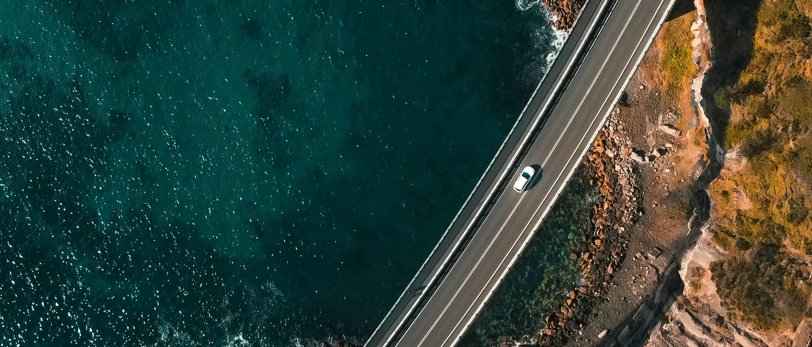
    <div class="wrap inner">
      <p class="label">Scale</p>
      <p class="big fade">Three time zones, one legal system, and no land border with anyone.</p>
    </div>
  </div>
</section>

<!-- ══ THE COUNTRY, IN PHOTOGRAPHS AND FIGURES ══ -->
<section class="bento-sec wrap" id="glance">
  <div class="bento-head">
    <div><p class="label">The country</p><h2 class="h-head sec">Almost the size of Europe. Fewer people than Texas.</h2></div>
    <p class="label label--m">Interesting statistics worth knowing</p>
  </div>
  <div class="bento">
    <article class="tile t-wide fade">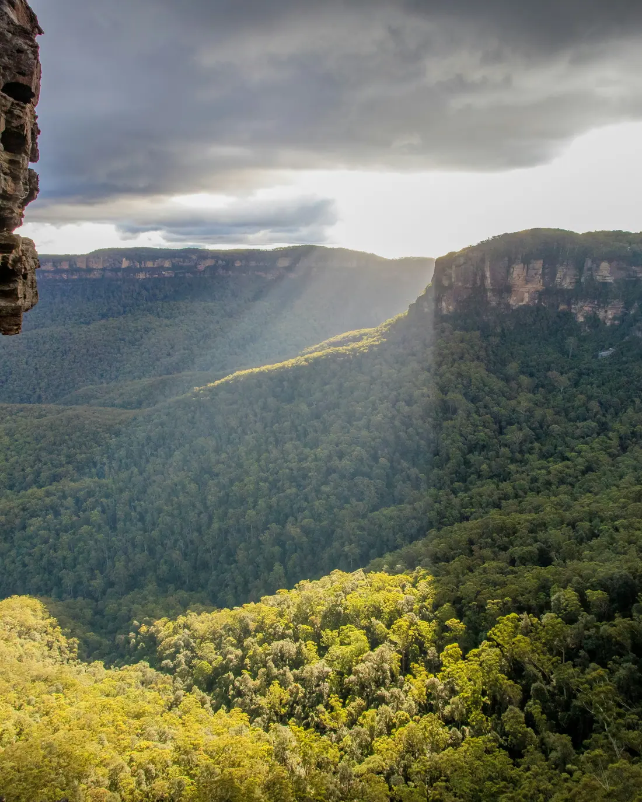
      <p class="k">Land area</p><p class="v">7,690,000 <small>km&sup2;</small></p>
      <p>Sixth largest country in the world, and the only one that is also a continent. Perth to Sydney is further than London to Moscow.</p></article>
    <article class="tile t-mid fade" style="--d:80ms">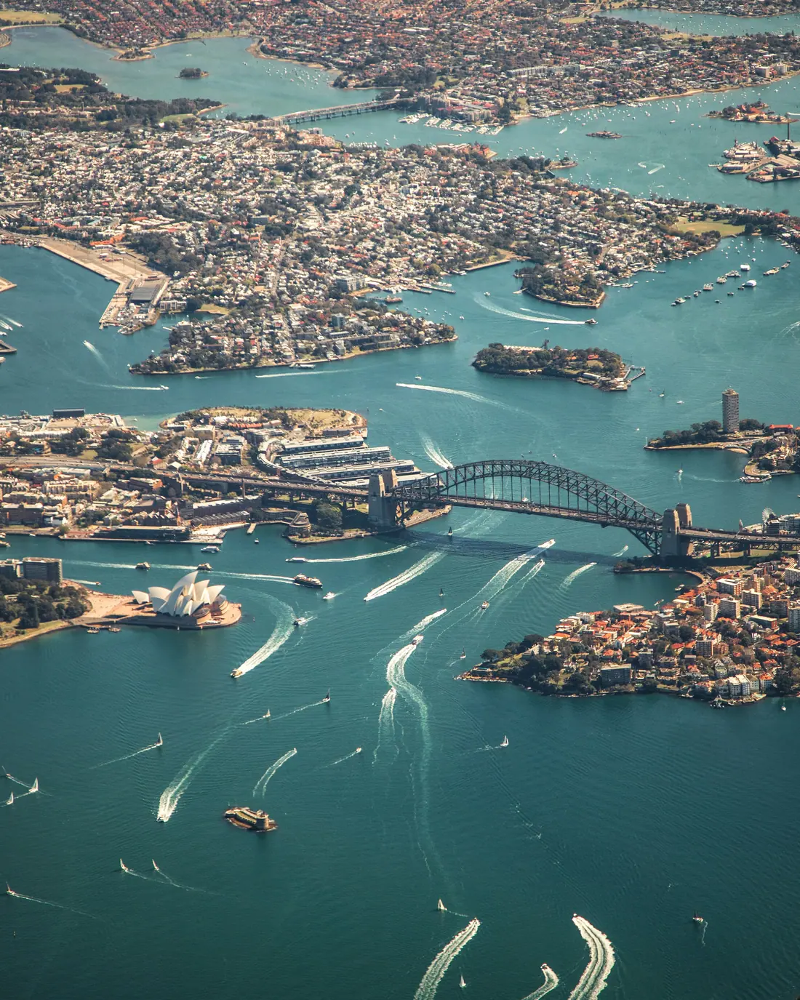
      <p class="k">People</p><p class="v">28.6 <small>million</small></p>
      <p>Under four people per square kilometre, and 86 per cent of them live within fifty kilometres of the coast.</p></article>
    <article class="tile t-mid fade" style="--d:160ms">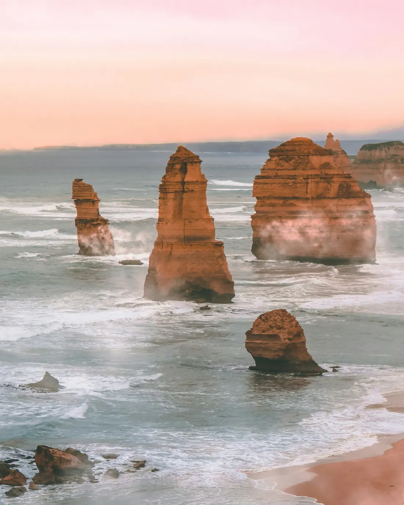
      <p class="k">Coastline</p><p class="v">36,000 <small>km</small></p></article>
    <article class="tile t-mid fade" style="--d:220ms">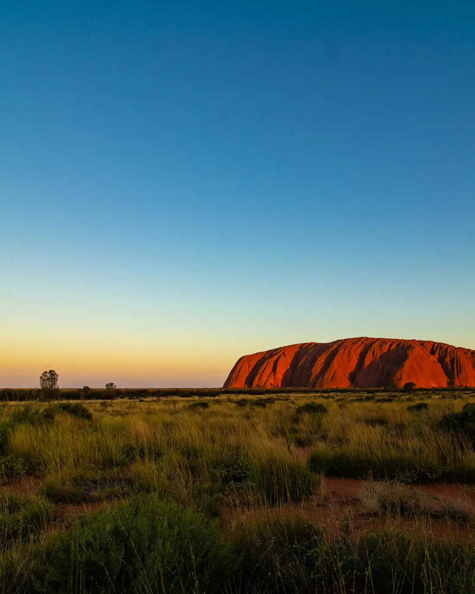
      <p class="k">Continuous culture</p><p class="v">65,000 <small>years</small></p>
      <p>Aboriginal and Torres Strait Islander peoples hold the oldest continuous living culture on earth.</p></article>
    <article class="tile t-mid fade" style="--d:280ms">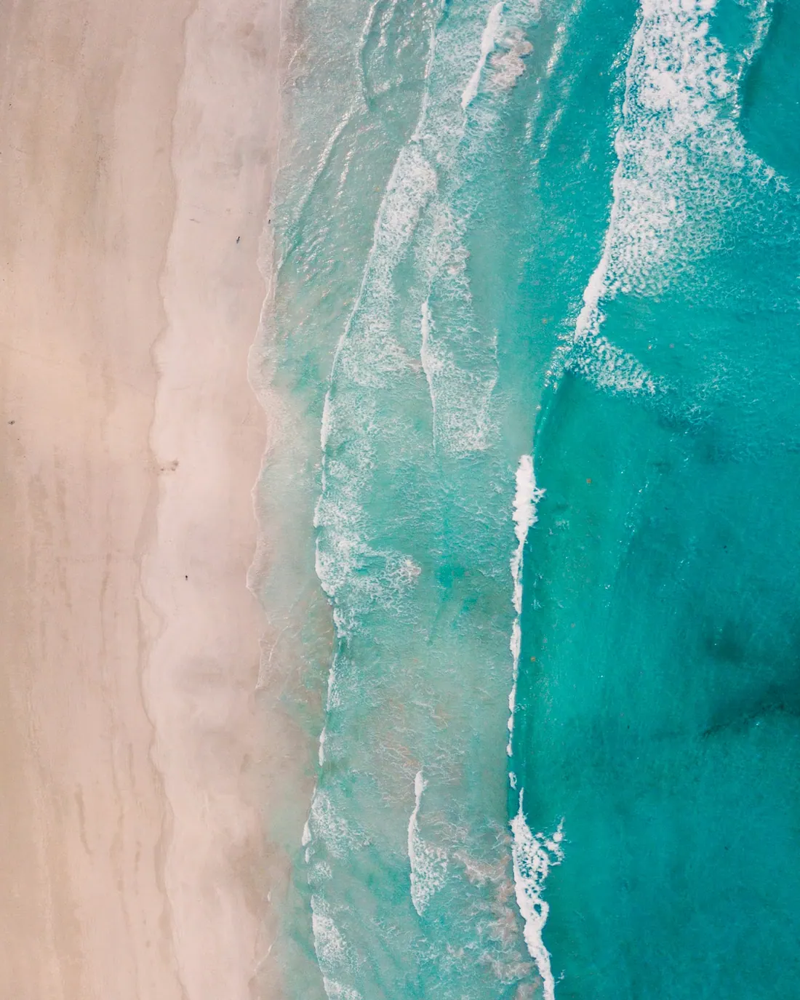
      <p class="k">Beaches</p><p class="v">10,685</p>
      <p>Beaches mapped by Geoscience Australia. It would take twenty-nine years if you visited one every day.</p></article>
    <article class="tile t-mid fade" style="--d:340ms">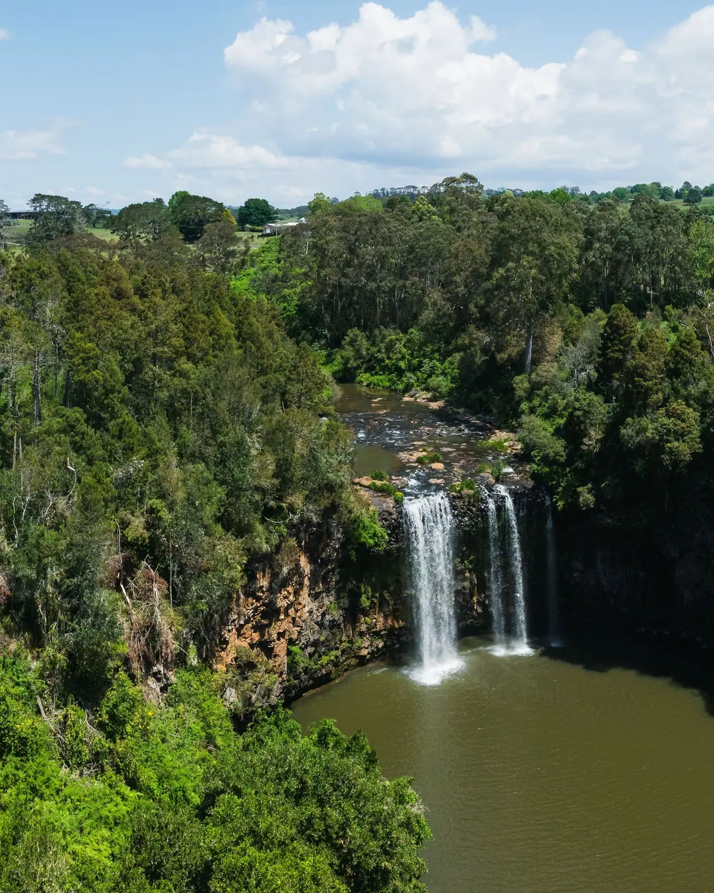
      <p class="k">World Heritage sites</p><p class="v">20</p>
      <p>World Heritage sites in Australia include the Great Barrier Reef, Uluru-Kata Tjuta, the Sydney Opera House and seventeen others.</p></article>
  </div>
</section>

<!-- ══ THE ATLAS — click a capital ══ -->
<section class="atlas" id="atlas">
  <div class="wrap">
    <div class="bento-head">
      <div><p class="label">Six states, two territories</p><h2 class="h-head sec">Every one of them has a capital, and every capital has a university.</h2></div>
    </div>
    <div class="atlas-grid">
      <div class="map-col">
        <p class="map-cue"><i aria-hidden="true"></i>Choose a city on the map to learn more</p>
        <svg class="map" viewBox="-30 -20 1155 975" role="group" aria-label="Map of Australia with the eight capital cities">
        <path class="land" d="M717.6,44.5C711.4,41.0 707.1,78.1 703.5,96.9C700.0,115.6 700.4,136.6 696.5,157.1C692.5,177.6 688.6,209.4 680.0,219.9C671.4,230.4 656.5,224.3 644.7,219.9C632.9,215.5 619.2,216.4 609.4,193.7C599.6,171.0 595.7,102.1 585.9,83.8C576.1,65.4 562.4,87.3 550.6,83.8C538.8,80.3 526.3,67.2 515.3,62.8C504.3,58.5 494.9,52.8 484.7,57.6C474.5,62.4 464.3,86.4 454.1,91.6C443.9,96.9 431.8,78.5 423.5,89.0C415.3,99.5 414.9,147.5 404.7,154.5C394.5,161.4 376.1,133.1 362.4,130.9C348.6,128.7 335.7,131.8 322.4,141.4C309.0,151.0 296.1,172.8 282.4,188.5C268.6,204.2 251.8,220.8 240.0,235.6C228.2,250.4 225.9,267.5 211.8,277.5C197.6,287.5 174.9,291.5 155.3,295.8C135.7,300.2 111.4,297.1 94.1,303.7C76.9,310.2 62.0,320.3 51.8,335.1C41.6,349.9 34.9,373.9 32.9,392.7C31.0,411.4 34.1,424.1 40.0,447.7C45.9,471.2 60.4,508.7 68.2,534.0C76.1,559.4 86.3,577.7 87.1,599.5C87.8,621.3 64.3,651.0 72.9,664.9C81.6,678.9 119.6,685.5 138.8,683.3C158.0,681.1 165.9,657.1 188.2,651.9C210.6,646.6 249.4,658.8 272.9,651.9C296.5,644.9 308.6,619.6 329.4,610.0C350.2,600.4 376.1,597.8 397.6,594.3C419.2,590.8 440.0,587.3 458.8,589.0C477.6,590.8 498.4,597.3 510.6,604.7C522.7,612.1 522.7,621.3 531.8,633.5C540.8,645.7 553.3,670.2 564.7,678.0C576.1,685.9 589.8,677.6 600.0,680.7C610.2,683.7 616.9,685.5 625.9,696.4C634.9,707.3 642.4,733.9 654.1,746.1C665.9,758.3 682.0,763.6 696.5,769.7C711.0,775.8 729.0,782.7 741.2,782.7C753.3,782.7 758.0,768.8 769.4,769.7C780.8,770.5 795.7,790.6 809.4,788.0C823.1,785.4 838.0,760.9 851.8,754.0C865.5,747.0 881.2,758.3 891.8,746.1C902.4,733.9 909.8,696.8 915.3,680.7C920.8,664.5 918.4,660.6 924.7,649.2C931.0,637.9 943.9,635.3 952.9,612.6C962.0,589.9 975.3,544.1 978.8,513.1C982.4,482.1 981.2,446.3 974.1,426.7C967.1,407.1 946.7,403.6 936.5,395.3C926.3,387.0 923.1,390.1 912.9,377.0C902.7,363.9 890.2,334.7 875.3,316.8C860.4,298.9 836.9,288.0 823.5,269.6C810.2,251.3 802.0,226.0 795.3,206.8C788.6,187.6 792.5,169.3 783.5,154.5C774.5,139.6 752.2,136.1 741.2,117.8C730.2,99.5 723.9,48.0 717.6,44.5Z"/>
        <path class="land" d="M769.4,829.9C774.9,826.8 785.9,829.0 800.0,829.9C814.1,830.7 845.1,826.8 854.1,835.1C863.1,843.4 855.7,867.8 854.1,879.6C852.5,891.4 850.6,901.4 844.7,905.8C838.8,910.2 828.2,910.6 818.8,905.8C809.4,901.0 796.9,886.6 788.2,877.0C779.6,867.4 770.2,856.0 767.1,848.2C763.9,840.3 763.9,832.9 769.4,829.9Z"/>
        <g class="borders" aria-hidden="true"><path class="border" d="M400.0,153.1 L400.0,593.7"/><path class="border" d="M400.0,445.0 L682.4,445.0"/><path class="border" d="M611.8,445.0 L611.8,197.7"/><path class="border" d="M682.4,445.0 L682.4,760.8"/><path class="border" d="M682.4,523.6 L869.4,523.6 L903.5,514.4 L927.1,522.3 L952.9,502.6 L977.6,501.8"/><path class="border" d="M682.4,655.8 L715.3,658.4 L738.8,680.7 L764.7,700.3 L795.3,705.5 L828.2,708.1 L849.4,729.1 L893.4,746.1"/><path class="border" d="M864.9,683.8 L880.0,683.8 L880.0,704.7 L868.2,704.7 L864.9,683.8"/><path class="leader" d="M880,691 L955,704"/></g>
        <g class="states" aria-hidden="true"><text class="st-nm" x="224" y="432">WA</text><text class="st-nm" x="499" y="275">NT</text><text class="st-nm" x="536" y="537">SA</text><text class="st-nm" x="776" y="340">QLD</text><text class="st-nm" x="814" y="602">NSW</text><text class="st-nm" x="744" y="723">VIC</text><text class="st-nm" x="798" y="853">TAS</text><text class="st-nm" x="965" y="711" text-anchor="start">ACT</text></g>
        <g id="pins"></g>
        </svg>
      </div>
      <article class="place" id="place" aria-live="polite">
        <div class="ph">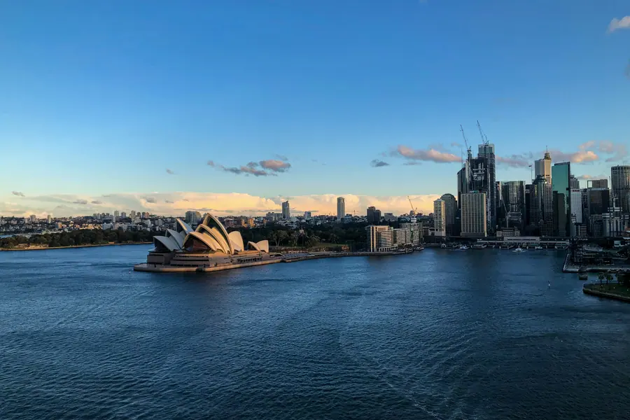</div>
        <div class="bd">
          <p class="st" id="pl-state">New South Wales</p>
          <h3 class="h-sub" id="pl-city">Sydney</h3>
          <p id="pl-txt">The biggest city and the biggest graduate job market, wrapped around a harbour and thirty-odd beaches. Also the most expensive place in the country to rent.</p>
          <dl>
            <div><dt>Universities</dt><dd id="pl-uni">6</dd></div>
          </dl>
          <a class="cta more" id="pl-link" href="why-australia-sydney.html">Learn more about Sydney <span aria-hidden="true">&rarr;</span></a>
        </div>
      </article>
    </div>
  </div>
</section>

<!-- ══ NIGHT BAND — invented here ══ -->
<section class="night" id="innovation" data-dark>
  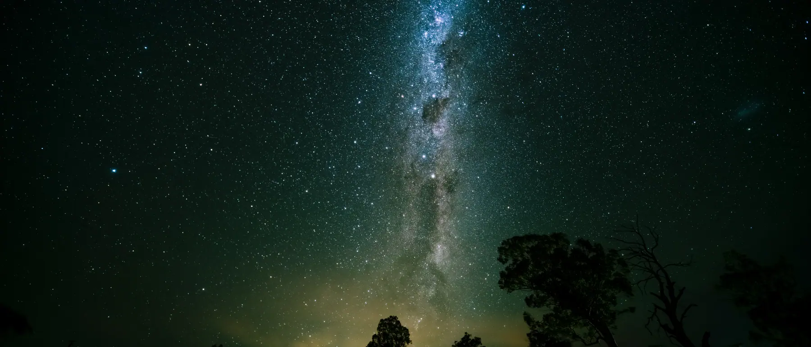
  <div class="wrap">
    <p class="label">Australian inventions and discoveries</p>
    <h2 class="h-head sec">Four per cent of the world&rsquo;s research output, by 0.3 per cent of its people.</h2>
    <p class="lead" style="margin-top:.9rem">Wi&#8209;Fi came out of a failed hunt for exploding black holes. Pick a year, or let it run.</p>
    <div class="tl">
      <div class="tl-track" role="tablist" aria-label="Australian inventions by year" id="tl-track"></div>
      <div class="tl-panel">
        <div>
          <p class="who" id="in-who">CSIRO &middot; Radiophysics</p>
          <h3 id="in-name">Wi&#8209;Fi</h3>
        </div>
        <div>
          <p class="txt" id="in-txt">Radio astronomers chasing signals from space wrote the maths for untangling a reflected signal bouncing around a room. That patent became the fast wireless LAN standard.</p>
          <p class="now" id="in-now">Now in billions of devices</p>
        </div>
      </div>
    </div>
  </div>
</section>

<!-- ══ UNIVERSITIES ══ -->
<section class="uni-sec wrap" id="universities">
  <div class="uni-grid">
    <figure class="uni-shot fade">
      
      <figcaption>The quadrangle, University of Sydney &mdash; founded 1850</figcaption>
    </figure>
    <div>
      <p class="label">Universities &amp; research</p>
      <h2 class="h-head sec">Forty-two universities. Nine in the global top hundred.</h2>
      <p class="lead" style="margin-top:.9rem">Thirty-six public and six private universities. No country of this size comes close on that ratio.</p>
      <div class="rank-head"><span>QS ranking</span><span>University</span><span>State</span></div>
      <ol class="rank">
        <li><span class="r">19</span><span class="u">UNSW Sydney</span><span class="c">NSW</span></li>
        <li><span class="r">22</span><span class="u">University of Melbourne</span><span class="c">VIC</span></li>
        <li><span class="r">28</span><span class="u">University of Sydney</span><span class="c">NSW</span></li>
        <li><span class="r">29</span><span class="u">Australian National University</span><span class="c">ACT</span></li>
        <li><span class="r">31</span><span class="u">Monash University</span><span class="c">VIC</span></li>
        <li><span class="r">40</span><span class="u">University of Queensland</span><span class="c">QLD</span></li>
        <li><span class="r">77</span><span class="u">University of Western Australia</span><span class="c">WA</span></li>
        <li><span class="r">79</span><span class="u">Adelaide University</span><span class="c">SA</span></li>
        <li><span class="r">89</span><span class="u">University of Technology Sydney</span><span class="c">NSW</span></li>
      </ol>
      <p class="label label--m" style="margin-top:.9rem">QS World University Rankings 2026</p>
    </div>
  </div>
  <div class="guards">
    <div class="guard fade"><h4>The law</h4><p><b>ESOS Act.</b> By an act of parliament, every provider that teaches an international student must be registered on CRICOS and is regulated by TEQSA.</p></div>
    <div class="guard fade" style="--d:80ms"><h4>The money</h4><p><b>Tuition Protection Service.</b> If a provider fails to deliver, the government-backed scheme places the student at a different university or refunds the fees. Your investment is safe, and most other countries have no equivalent.</p></div>
    <div class="guard fade" style="--d:160ms"><h4>The qualification</h4><p><b>Australian Qualifications Framework.</b> One national framework, and qualifications recognised globally.</p></div>
    <div class="guard fade" style="--d:240ms"><h4>The record</h4><p><b>16 Nobel laureates.</b> Among them the man who made penicillin usable, and the team that found the universe is accelerating.</p></div>
  </div>
</section>

<!-- ══ LIFE ══ -->
<section class="life" id="life">
  <div class="wrap">
    <div class="bento-head">
      <div><p class="label">Culture &amp; lifestyle</p><h2 class="h-head sec">One in three people were born outside Australia.</h2></div>
      <p class="label label--m">300+ languages spoken at home</p>
    </div>
    <p class="lead">Arabic, Hindi, Urdu, Mandarin and Punjabi are among the largest. A student arriving from the Gulf is not an exception there &mdash; halal food in every suburb, prayer rooms on every campus, mosques in every capital, and a public culture that treats all of it as ordinary.</p>
    <div class="mosaic">
      <div class="shot s-tall fade">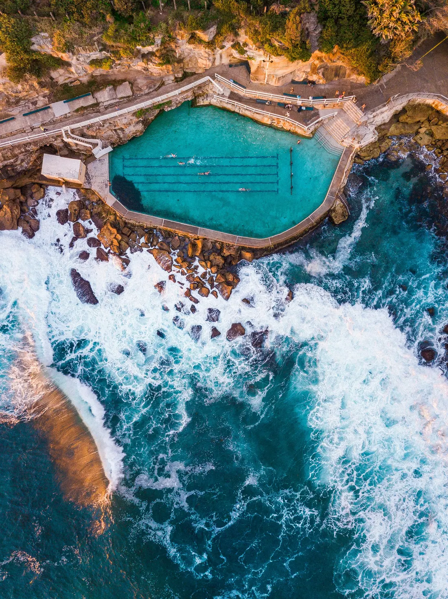<span>Ocean pools &middot; NSW</span></div>
      <div class="shot s-wide fade" style="--d:70ms">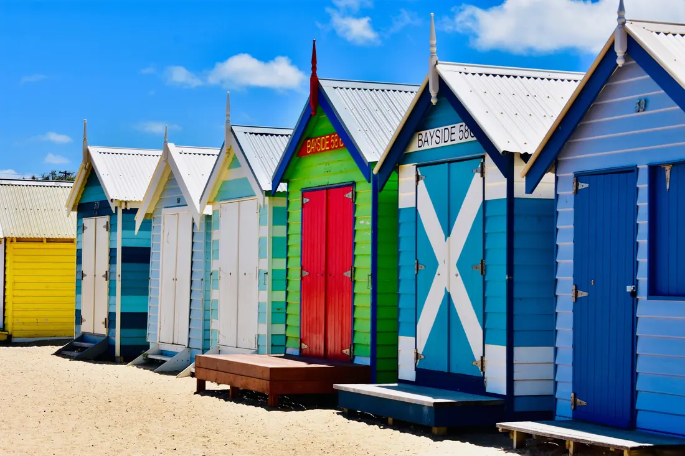<span>Brighton Beach &middot; Melbourne</span></div>
      <div class="shot fade" style="--d:140ms">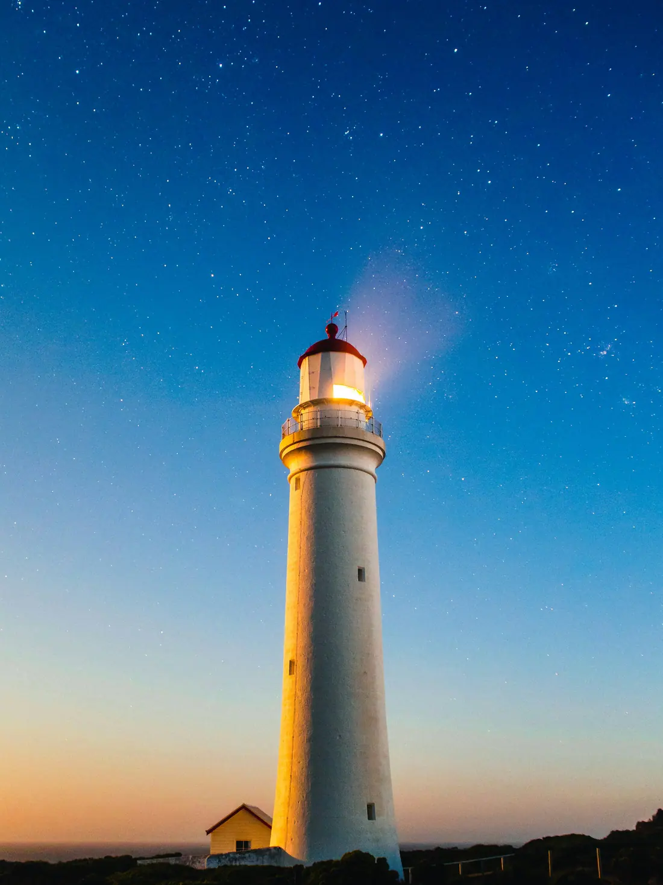<span>Split Point &middot; VIC</span></div>
      <div class="shot s-wide fade" style="--d:210ms">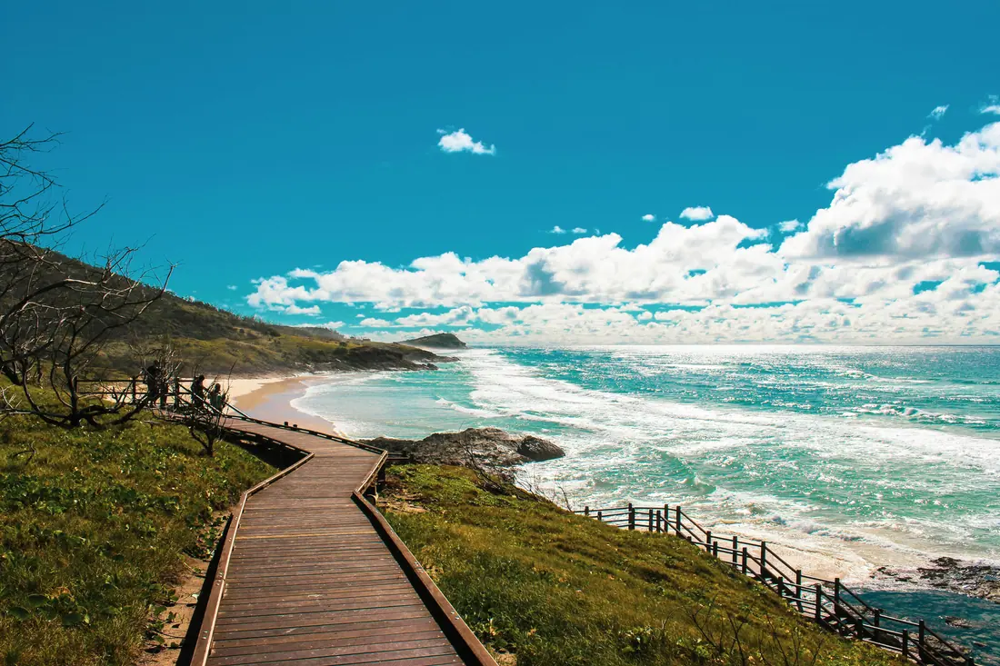<span>Coast walks &middot; everywhere</span></div>
      <div class="shot fade" style="--d:280ms">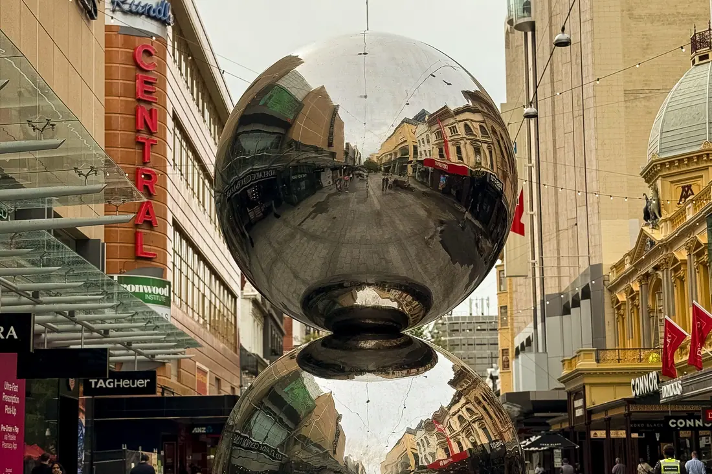<span>Rundle Mall &middot; Adelaide</span></div>
    </div>
    <div class="chips-row">
      <div class="chip-f fade"><span>Work rights</span><b>48 hrs</b><p>Per fortnight during session, and unrestricted work rights during the breaks &mdash; at one of the world&rsquo;s highest minimum wages.</p></div>
      <div class="chip-f fade" style="--d:80ms"><span>Health cover</span><b>OSHC</b><p>Health insurance is mandatory, so a student is covered from the day they land to the day the visa ends.</p></div>
      <div class="chip-f fade" style="--d:160ms"><span>Safety</span><b>Top 15</b><p>On the Global Peace Index, with low violent crime and strict firearms law.</p></div>
      <div class="chip-f fade" style="--d:240ms"><span>After graduation</span><b>2&ndash;3 yrs</b><p>The Temporary Graduate visa &mdash; the post-study work visa for international students &mdash; for most degrees, and longer for qualifications in demand.</p></div>
    </div>
  </div>
</section>

<!-- ══ COMPANIES ══ -->
<section class="biz" id="business">
  <div class="wrap biz-head">
    <div><p class="label">Economy &amp; industry</p><h2 class="h-head sec">The twelfth largest economy, and the fourth largest pension pool on earth.</h2></div>
    <p class="label label--m">Australian companies that went out</p>
  </div>
  <div class="marquee" aria-hidden="true"><ul id="mq">
    <li>Atlassian</li><li>Canva</li><li>CSL</li><li>Cochlear</li><li>BHP</li><li>Macquarie</li><li>ResMed</li><li>WiseTech</li><li>Aesop</li><li>Westfield</li><li>Qantas</li><li>Rio Tinto</li><li>Cotton On</li><li>Rip Curl</li><li>Boost Juice</li><li>Lonely Planet</li>
  </ul></div>
  <div class="wrap">
    <div class="co-grid">
      <article class="co fade"><span class="sect">Software</span><span class="nm">Atlassian</span><p>Jira and Confluence, founded in Sydney, used by most of the Fortune 500.</p></article>
      <article class="co fade" style="--d:60ms"><span class="sect">Design software</span><span class="nm">Canva</span><p>Started in Perth, headquartered in Sydney, past 200 million users worldwide.</p></article>
      <article class="co fade" style="--d:120ms"><span class="sect">Biotechnology</span><span class="nm">CSL</span><p>Melbourne-based, among the largest plasma and vaccine companies in the world.</p></article>
      <article class="co fade" style="--d:180ms"><span class="sect">Medical devices</span><span class="nm">Cochlear</span><p>Born out of University of Melbourne research, now selling into 180 countries.</p></article>
      <article class="co fade" style="--d:240ms"><span class="sect">Finance</span><span class="nm">Macquarie Group</span><p>The world&rsquo;s largest infrastructure asset manager, in more than thirty markets.</p></article>
      <article class="co fade" style="--d:300ms"><span class="sect">Consumer</span><span class="nm">Aesop</span><p>Melbourne skincare, sold to L&rsquo;Or&eacute;al in 2023 for around US$2.5 billion.</p></article>
    </div>
  </div>
</section>

<!-- ══ CLOSE ══ -->
<section class="close" id="close" data-dark>
  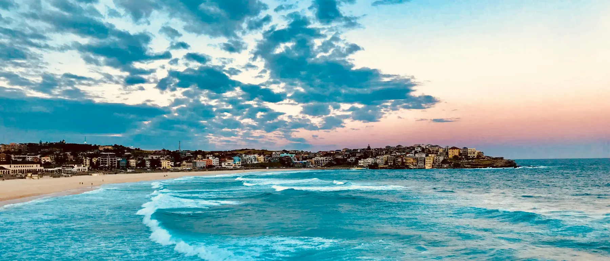
  <div class="wrap">
    <p class="label">Next</p>
    <h2 class="h-head"><span class="rev"><span>Australia is the answer</span></span><span class="rev"><span style="--d:120ms">for some families.</span></span></h2>
    <p class="lead fade" style="--d:380ms">Not all of them. The first conversation is thirty minutes and costs nothing, and it is as likely to end with me saying no as yes.</p>
    <div class="close-row fade" style="--d:500ms">
      <a class="cta" href="https://calendar.app.google/Wr325oNEYvxfeW6F9" target="_blank" rel="noopener">Book a discovery call &rarr;</a>
      <a class="alt" href="students-families.html">See the student pathway</a>
    </div>
  </div>
</section>
</main>


<footer data-dark>
  <div class="wrap">
    <div class="foot">
      <div class="foot-brand">
        <a class="brand" href="/"><svg class="lockup" viewBox="0 0 613.57 102.58" role="img" aria-label="Ironbark Advisory"><g transform="scale(3.225912) translate(-8.1 -8.1)"><g stroke="currentColor" stroke-width="3.8" stroke-linecap="round" fill="none"><path d="M10 17.9V38"/><path d="M17 12.9V38"/><path d="M31 14.4V38"/><path d="M38 19.3V38"/></g><path d="M24 10V38" stroke="#E8A317" stroke-width="3.8" stroke-linecap="round" fill="none"/></g><path fill="currentColor" d="M145.7 72.4V3.7H160.9V72.4Z M177.3 72.4V19.7H188.4L189.4 29H190.2Q191.3 26.2 193.4 23.8Q195.5 21.4 198.6 19.9Q201.8 18.5 205.8 18.5Q207.6 18.5 209.3 18.7Q211.1 19 212.5 19.5V31.6H205.6Q201.6 31.6 198.8 32.9Q196.1 34.3 194.4 36.6Q192.7 38.9 191.9 41.6Q191.1 44.4 191.1 47.3V72.4Z M249.4 73.6Q239.3 73.6 232 70.5Q224.8 67.4 220.9 61.2Q217.1 55.1 217.1 46Q217.1 36.8 220.9 30.7Q224.8 24.6 232 21.5Q239.3 18.5 249.4 18.5Q259.5 18.5 266.7 21.5Q274 24.6 277.8 30.7Q281.7 36.8 281.7 46Q281.7 55.1 277.8 61.2Q274 67.4 266.7 70.5Q259.5 73.6 249.4 73.6ZM249.4 62.9Q255 62.9 259 61Q263.1 59.2 265.2 55.6Q267.4 52.1 267.4 47V45Q267.4 39.8 265.2 36.3Q263.1 32.8 259 31Q255 29.2 249.4 29.2Q243.8 29.2 239.7 31Q235.7 32.8 233.5 36.3Q231.4 39.8 231.4 45V47Q231.4 52.1 233.5 55.6Q235.7 59.2 239.7 61Q243.8 62.9 249.4 62.9Z M293.4 72.4V19.7H304.5L305.5 28.7H306.4Q309.3 24.8 313 22.6Q316.7 20.4 320.8 19.4Q325 18.5 328.9 18.5Q336.3 18.5 341.2 20.8Q346.2 23.1 348.7 27.8Q351.2 32.5 351.2 39.8V72.4H337.4V42.2Q337.4 38.8 336.4 36.4Q335.5 34.1 333.7 32.7Q332 31.3 329.5 30.7Q327.1 30.1 324.1 30.1Q319.7 30.1 315.8 31.9Q312 33.7 309.6 36.9Q307.2 40.1 307.2 44.4V72.4Z M398.4 73.6Q392 73.6 386.7 71.4Q381.4 69.3 377.7 64.1H376.9L375.7 72.4H364.6V-1.4e-14H378.4V26.4H379.1Q381.3 23.8 384.4 22Q387.5 20.3 391.3 19.4Q395.1 18.5 399.3 18.5Q407.1 18.5 412.9 21.5Q418.8 24.5 422.1 30.6Q425.4 36.7 425.4 46.1Q425.4 55.3 422 61.4Q418.7 67.6 412.6 70.6Q406.6 73.6 398.4 73.6ZM394.9 62Q400 62 403.7 60.2Q407.4 58.5 409.3 55.1Q411.3 51.7 411.3 46.8V45.3Q411.3 40.4 409.3 37Q407.4 33.7 403.8 31.9Q400.2 30.1 395.1 30.1Q391.2 30.1 388.1 31.1Q385 32.2 382.8 34.1Q380.6 36.1 379.4 39Q378.3 41.9 378.3 45.7V46.5Q378.3 51.5 380.3 54.9Q382.3 58.4 386 60.2Q389.8 62 394.9 62Z M457 73.6Q452.3 73.6 448.2 72.8Q444.2 72.1 441.1 70.3Q438.1 68.6 436.4 65.6Q434.7 62.6 434.7 58.1Q434.7 51.7 438.2 48.1Q441.7 44.5 448.1 42.9Q454.5 41.3 463 40.9Q471.6 40.5 481.6 40.5V38.3Q481.6 34.9 479.9 32.9Q478.3 30.9 474.8 30Q471.4 29.2 465.8 29.2Q461.3 29.2 457.9 29.8Q454.5 30.4 452.6 31.6Q450.7 32.8 450.7 34.6V35.8H436.9Q436.8 35.4 436.7 35Q436.7 34.6 436.7 34.1Q436.7 29.4 440.1 25.9Q443.5 22.4 450.2 20.4Q456.9 18.5 466.9 18.5Q476.2 18.5 482.5 20.2Q488.9 21.9 492.1 25.8Q495.4 29.7 495.4 36.3V59Q495.4 60.9 496.1 61.9Q496.9 62.9 498.8 62.9H503.9V71.9Q502.9 72.3 500.2 72.9Q497.6 73.6 494.4 73.6Q490 73.6 487.5 72.5Q485.1 71.4 484 69.5Q483 67.6 482.6 65.3H481.8Q479 67.9 475.1 69.8Q471.2 71.7 466.6 72.6Q462 73.6 457 73.6ZM460.4 62.9Q463.6 62.9 467.2 62.2Q470.9 61.5 474.2 60.1Q477.5 58.8 479.5 56.7Q481.6 54.7 481.6 52V49.3Q470.4 49.3 463 50Q455.7 50.8 452.1 52.6Q448.5 54.4 448.5 57.7Q448.5 59.9 450.2 61Q452 62.1 454.7 62.5Q457.5 62.9 460.4 62.9Z M510.6 72.4V19.7H521.7L522.7 29H523.5Q524.6 26.2 526.7 23.8Q528.8 21.4 531.9 19.9Q535.1 18.5 539.1 18.5Q540.9 18.5 542.6 18.7Q544.4 19 545.8 19.5V31.6H538.9Q534.9 31.6 532.1 32.9Q529.4 34.3 527.7 36.6Q526 38.9 525.2 41.6Q524.4 44.4 524.4 47.3V72.4Z M554 72.4V-1.4e-14H567.8V43.6L595.6 19.7H612.8L590.2 40.6L613.6 72.4H597.2L579.8 48.9L567.8 57.8V72.4Z"/><path class="sub" fill="#3B5666" d="M145.7 102.6 154.8 84.7H157.5L166.7 102.6H164.1L161.8 98H150.4L148.1 102.6ZM151.4 96.1H160.8L157.9 90.4Q157.8 90 157.5 89.6Q157.3 89.1 157 88.5Q156.8 88 156.6 87.5Q156.4 87.1 156.2 86.8H156Q155.7 87.4 155.4 88.1Q155 88.8 154.7 89.4Q154.4 90 154.3 90.4Z M213.5 102.6V84.7H222.4Q225.7 84.7 228 85.7Q230.3 86.8 231.5 88.7Q232.8 90.7 232.8 93.7Q232.8 96.6 231.5 98.6Q230.3 100.6 228 101.6Q225.7 102.6 222.4 102.6ZM215.8 100.6H222.4Q224.1 100.6 225.5 100.2Q227 99.9 228.1 99.1Q229.2 98.3 229.8 97Q230.4 95.7 230.4 94V93.4Q230.4 91.6 229.8 90.3Q229.2 89.1 228.1 88.3Q227 87.5 225.5 87.1Q224.1 86.7 222.4 86.7H215.8Z M286 102.6 277.4 84.7H280L285.7 96.7Q285.9 97.1 286.2 97.8Q286.5 98.5 286.9 99.2Q287.2 99.9 287.5 100.4H287.7Q287.9 99.9 288.3 99.2Q288.6 98.5 288.9 97.9Q289.2 97.2 289.5 96.7L295.2 84.7H297.6L289 102.6Z M344.1 102.6V84.7H346.4V102.6Z M403.5 102.9Q401.7 102.9 400 102.7Q398.3 102.5 397 101.9Q395.7 101.3 394.9 100.2Q394.1 99.2 394.1 97.5Q394.1 97.3 394.2 97.2Q394.2 97.1 394.2 97H396.5Q396.4 97.2 396.4 97.4Q396.4 97.5 396.4 97.8Q396.4 98.8 397.3 99.5Q398.1 100.2 399.7 100.6Q401.3 100.9 403.5 100.9Q404.5 100.9 405.5 100.8Q406.5 100.7 407.3 100.5Q408.2 100.3 408.8 99.9Q409.5 99.6 409.8 99Q410.2 98.5 410.2 97.8Q410.2 96.8 409.6 96.2Q408.9 95.6 407.8 95.3Q406.7 94.9 405.3 94.7Q403.9 94.4 402.5 94.2Q401 94 399.6 93.7Q398.3 93.3 397.1 92.8Q396 92.3 395.4 91.4Q394.7 90.5 394.7 89.2Q394.7 88.2 395.2 87.4Q395.7 86.5 396.7 85.8Q397.8 85.2 399.4 84.8Q401.1 84.4 403.5 84.4Q406 84.4 407.6 84.9Q409.2 85.3 410.1 86Q411 86.7 411.4 87.5Q411.8 88.4 411.8 89.2V89.7H409.5V89.2Q409.5 88.4 408.9 87.8Q408.2 87.2 406.9 86.8Q405.6 86.4 403.7 86.4Q401.5 86.4 400.1 86.7Q398.6 87 397.9 87.6Q397.1 88.2 397.1 89.1Q397.1 90 397.7 90.5Q398.4 91 399.5 91.3Q400.6 91.7 402 91.9Q403.4 92.1 404.8 92.4Q406.3 92.6 407.7 92.9Q409.1 93.3 410.2 93.8Q411.3 94.4 411.9 95.3Q412.6 96.2 412.6 97.5Q412.6 99.5 411.4 100.7Q410.3 101.9 408.2 102.4Q406.2 102.9 403.5 102.9Z M470.7 102.9Q467.2 102.9 464.7 101.8Q462.2 100.8 460.8 98.7Q459.5 96.7 459.5 93.7Q459.5 90.6 460.8 88.6Q462.2 86.5 464.7 85.5Q467.2 84.4 470.7 84.4Q474.1 84.4 476.7 85.5Q479.2 86.5 480.5 88.6Q481.9 90.6 481.9 93.7Q481.9 96.7 480.5 98.7Q479.2 100.8 476.7 101.8Q474.1 102.9 470.7 102.9ZM470.7 100.9Q472.6 100.9 474.1 100.5Q475.7 100.1 476.9 99.3Q478.2 98.5 478.8 97.1Q479.5 95.8 479.5 93.9V93.4Q479.5 91.5 478.8 90.2Q478.2 88.9 476.9 88Q475.7 87.2 474.1 86.8Q472.6 86.4 470.7 86.4Q468.8 86.4 467.2 86.8Q465.6 87.2 464.4 88Q463.2 88.9 462.5 90.2Q461.8 91.5 461.8 93.4V93.9Q461.8 95.8 462.5 97.1Q463.2 98.5 464.4 99.3Q465.6 100.1 467.2 100.5Q468.8 100.9 470.7 100.9Z M530 102.6V84.7H543Q544.8 84.7 545.9 85.4Q547.1 86.1 547.7 87.3Q548.4 88.5 548.4 90Q548.4 91.7 547.5 93Q546.6 94.4 544.9 95L548.8 102.6H546.2L542.6 95.3H532.3V102.6ZM532.3 93.4H542.6Q544.2 93.4 545.1 92.4Q546 91.5 546 90Q546 89 545.6 88.3Q545.2 87.5 544.4 87.1Q543.7 86.7 542.6 86.7H532.3Z M602.3 102.6V95.1L593.4 84.7H596.2L603.4 93.2H603.7L610.9 84.7H613.6L604.6 95.1V102.6Z"/></svg><svg class="mark-only" viewBox="8.1 8.1 31.8 31.8" fill="none" aria-hidden="true"><g stroke="currentColor" stroke-width="3.8" stroke-linecap="round"><path d="M10 17.9V38"/><path d="M17 12.9V38"/><path d="M31 14.4V38"/><path d="M38 19.3V38"/></g><path d="M24 10V38" stroke="#E8A317" stroke-width="3.8" stroke-linecap="round"/></svg></a>
        <p>Independent education advisory, based in the UAE.</p>
      </div>
      <div class="foot-cols">
        <div><h5>Site</h5><ul>
          <li><a href="about.html">About</a></li>
          <li><a href="why-australia.html">Why Australia</a></li>
          <li><a href="students-families.html">Students &amp; families</a></li>
          <li><a href="institutions.html">Institutions</a></li>
          <li><a href="insights.html">News</a></li>
          <li><a href="contact.html">Contact</a></li>
        </ul></div>
        <div><h5>Contact</h5><ul>
          <li><a href="mailto:hello@ironbarkadvisory.ae">hello@ironbarkadvisory.ae</a></li>
          <li><a href="https://calendar.app.google/Wr325oNEYvxfeW6F9" target="_blank" rel="noopener">Book a discovery call</a></li>
          <li><a href="https://www.linkedin.com/in/aqeebakram" target="_blank" rel="noopener">Connect on LinkedIn</a></li>
        </ul></div>
      </div>
    </div>
    <div class="colophon">
      <span>&copy; 2026 Ironbark Advisory &middot; Dubai, United Arab Emirates</span>
      <span>Independent. No provider commissions.</span>
    </div>
  </div>
</footer>

<script>
(() => {
  "use strict";
  const reduce=matchMedia("(prefers-reduced-motion: reduce)").matches;
  const clamp=(v,a=0,b=1)=>v<a?a:v>b?b:v, lerp=(a,b,t)=>a+(b-a)*t;
  const mast=document.getElementById("masthead");
  // ---- hero frames: crossfade every 4s, paused off-screen and in background tabs ----
  const slides=[...document.querySelectorAll(".hero .slide")];
  if(slides.length>1){
    let hi=0, timer=null, onScreen=true;
    const hero=document.querySelector(".hero");
    const mark=repaint=>{ hero.dataset.top=slides[hi].dataset.top||"light"; if(repaint) paint(); };
    const step=()=>{
      const prev=slides[hi];
      // the outgoing frame keeps drifting until it is fully faded out, or it snaps
      prev.classList.remove("on"); prev.classList.add("out");
      setTimeout(()=>prev.classList.remove("out"),1400);
      hi=(hi+1)%slides.length; slides[hi].classList.add("on"); mark(true);
    };
    mark(false);
    const run=()=>{ if(!timer && onScreen && !reduce && document.visibilityState==="visible") timer=setInterval(step,4000); };
    const halt=()=>{ clearInterval(timer); timer=null; };
    run();
    addEventListener("visibilitychange",()=>document.visibilityState==="visible"?run():halt());
    if("IntersectionObserver" in window){
      new IntersectionObserver(es=>{ onScreen=es[0].isIntersecting; onScreen?run():halt(); },{threshold:0})
        .observe(document.querySelector(".hero"));
    }
  }

  // ---- primary navigation drawer ----
  const burger=document.getElementById("burger");
  const closeNav=()=>{ mast.classList.remove("nav-open");
    burger.setAttribute("aria-expanded","false"); document.body.classList.remove("nav-lock"); };
  burger.addEventListener("click",()=>{
    const open=!mast.classList.contains("nav-open");
    mast.classList.toggle("nav-open",open);
    burger.setAttribute("aria-expanded",String(open));
    document.body.classList.toggle("nav-lock",open);
  });
  document.querySelectorAll("#mast-nav a").forEach(a=>a.addEventListener("click",closeNav));
  addEventListener("keydown",e=>{ if(e.key==="Escape") closeNav(); });
  // widening past the breakpoint must not leave the page scroll-locked
  matchMedia("(min-width:1151px)").addEventListener("change",e=>{ if(e.matches) closeNav(); });

  const par=[...document.querySelectorAll("[data-par]")];
  const darkZones=[...document.querySelectorAll("[data-dark]")];
  const railMQ=matchMedia("(min-width: 901px)");
  const pinned=()=>railMQ.matches && !reduce;

  // both rails share one implementation
  const RAILS=[...document.querySelectorAll("[data-rail]")].map(rail=>{
    const key=rail.dataset.rail;
    return {key, rail,
      sec:rail.closest(".rail-sec"),
      bar:document.querySelector(`[data-bar="${key}"]`),
      name:document.querySelector(`[data-name="${key}"]`),
      cards:[...rail.children],
      names:[...rail.children].map(c=>(c.querySelector("h3")||{}).textContent||""),
      top:0, span:1, over:0};
  });

  let sy=scrollY, target=sy, last=0, running=false, lastW=window.innerWidth;

  function layout(){
    RAILS.forEach(r=>{
      if(!pinned()){ r.sec.style.height="auto"; r.rail.style.transform=""; r.cards.forEach(c=>c.classList.remove("near")); return; }
      r.rail.style.transform="translate3d(0,0,0)";
      // scrollWidth omits a flex container's TRAILING padding, so the rail was
      // short by one gutter and the last card came to rest 24px from the edge
      // while the first one starts a full gutter in. Add the padding back and
      // drop the old +24 fudge, and both ends sit on the same gutter.
      const padR=parseFloat(getComputedStyle(r.rail).paddingRight)||0;
      r.over=Math.max(0, r.rail.scrollWidth + padR - window.innerWidth);
      // the fill is translated by (n-1)x its own width, so it has to BE 1/n wide.
      // Without a width it is zero, and the progress bar never moves at all.
      if(r.bar) r.bar.style.width=(100/Math.max(1,r.cards.length))+"%";
      r.sec.style.height=(window.innerHeight + Math.max(r.over,320)*1.45)+"px";
    });
  }
  function measure(){
    RAILS.forEach(r=>{
      const b=r.sec.getBoundingClientRect();
      r.top=b.top+scrollY; r.span=Math.max(1,b.height-window.innerHeight);
    });
  }
  function paint(){
    mast.classList.toggle("docked", sy>Math.min(110,window.innerHeight*.16));
    const hh=mast.offsetHeight||64;
    // a hero frame that is dark along its top inverts the bar the same way a dark section does
    const heroTop=(()=>{ const h=document.querySelector(".hero");
      if(!h||h.dataset.top!=="dark") return false;
      const b=h.getBoundingClientRect(); return b.top<hh*.55 && b.bottom>hh*.55; })();
    mast.classList.toggle("on-dark", heroTop || darkZones.some(el=>{
      const b=el.getBoundingClientRect(); return b.top<hh*.55 && b.bottom>0; }));
    if(!reduce) par.forEach(img=>{
      const s=img.closest("section"); if(!s) return;
      const b=s.getBoundingClientRect();
      if(b.bottom<-200||b.top>window.innerHeight+200) return;
      const mid=(b.top+b.height/2-window.innerHeight/2)/window.innerHeight;
      img.style.transform=`translate3d(0,${(-mid*parseFloat(img.dataset.par)*100).toFixed(2)}px,0)`;
    });
    if(!pinned()) return;
    RAILS.forEach(r=>{
      // scrollY, NOT the damped sy. Damping is right for the masthead and the
      // parallax, where a little lag reads as weight, and wrong here: a pinned
      // rail is the user dragging the cards sideways with their scroll, so any
      // lag reads as the cards sliding around behind the input. Measured, the
      // rail was still 73px short of its travel at the moment the pin released.
      const p=clamp((scrollY-r.top)/r.span);
      r.rail.style.transform=`translate3d(${-r.over*p}px,0,0)`;
      const n=r.cards.length;
      if(r.bar) r.bar.style.transform=`translateX(${p*(n-1)*100}%)`;
      const i=clamp(Math.round(p*(n-1)),0,n-1);
      r.cards.forEach((c,k)=>c.classList.toggle("near",k===i));
      if(r.name) r.name.textContent=r.names[i].trim();
    });
  }
  function frame(now){
    last=now||performance.now();
    // a debounced resize can be missed or fire against a stale viewport; if the
    // width has moved, the rails' cached overflow is wrong and a card gets clipped
    if(window.innerWidth!==lastW){ lastW=window.innerWidth; layout(); measure(); }
    target=scrollY; sy=reduce?target:lerp(sy,target,.12);
    if(Math.abs(target-sy)<.08) sy=target;
    paint(); requestAnimationFrame(frame);
  }
  addEventListener("scroll",()=>{ if(performance.now()-last<120) return; sy=target=scrollY; paint(); },{passive:true});
  addEventListener("visibilitychange",()=>{ if(document.visibilityState==="visible"){ sy=target=scrollY; paint(); sweep(); }});

  const watched=[...document.querySelectorAll(".rev,.fade,.claim,.stage,.cred,.card,.city")];
  const io=new IntersectionObserver((es,o)=>es.forEach(e=>{
    if(e.isIntersecting){ e.target.classList.add("in"); o.unobserve(e.target); }}),
    {rootMargin:"0px 0px -8% 0px",threshold:.1});
  watched.forEach(el=>io.observe(el));
  // Anything that sizes itself in JS moves everything below it AFTER measure()
  // has already cached the rails' positions. The Students arc sets #arc to
  // innerHeight*3.2 late, which pushed the process rail down by ~1980px: on
  // reaching it, p computed as 1.25, clamped to 1, and the rail opened on the
  // LAST card instead of the first. Re-measure whenever the page's height
  // actually changes. Only measure() is called here, never layout(), because
  // layout() writes heights and would feed itself.
  if("ResizeObserver" in window){
    let queued=false;
    new ResizeObserver(()=>{
      if(queued) return; queued=true;
      requestAnimationFrame(()=>{ queued=false; measure(); });
    }).observe(document.body);
  }
  addEventListener("load",()=>{ layout(); measure(); });

  requestAnimationFrame(()=>document.getElementById("hero").classList.add("in"));
  function sweep(){ watched.forEach(el=>{ if(el.classList.contains("in")) return;
    const b=el.getBoundingClientRect();
    if(b.bottom>0&&b.top<window.innerHeight) el.classList.add("in"); }); }
  setTimeout(sweep,2500);

  function boot(){ layout(); measure(); paint();
    if(!running){ running=true; requestAnimationFrame(frame); } }
  let rt; addEventListener("resize",()=>{ if(innerWidth>1150) closeNav();
    clearTimeout(rt);rt=setTimeout(()=>{layout();measure();paint();},150);});
  addEventListener("load",()=>setTimeout(boot,40));
  if(document.readyState==="complete") setTimeout(boot,40);
  else document.addEventListener("DOMContentLoaded",()=>setTimeout(boot,20));
  if(document.fonts&&document.fonts.ready) document.fonts.ready.then(()=>setTimeout(()=>{layout();measure();},60));
})();
</script>


<script>
/* Why Australia — the two interactive pieces on this page. Kept apart from the
   shared site script so the rails, masthead and hero behave exactly as they do
   everywhere else. Both pieces render their opening state immediately, so the
   page is complete before a single click. */
(() => {
  "use strict";

  /* ---- the atlas: eight capitals, one panel ---- */
  const PLACES=[
    {id:"perth",x:91,y:601,nm:"Perth",st:"Western Australia",u:"5",
     lx:26,ly:-16,img:"c_perth",alt:"Perth and the Swan River at dusk.",
     t:"The closest Australian capital to the Gulf, on the Indian Ocean and only a few hours off Dubai time."},
    {id:"darwin",x:443,y:91,nm:"Darwin",st:"Northern Territory",u:"1",
     lx:26,ly:6,img:"n_years",alt:"Uluru at dusk in the Northern Territory.",
     t:"The tropical north, closer to Jakarta than to Sydney, and the base for Indigenous and tropical health research."},
    {id:"adelaide",x:626,y:679,nm:"Adelaide",st:"South Australia",u:"3",
     lx:-26,ly:22,anchor:"end",img:"c_adelaide",alt:"Adelaide across the Torrens.",
     t:"Compact, walkable and noticeably cheaper to live in than the eastern capitals."},
    {id:"brisbane",x:965,y:484,nm:"Brisbane",st:"Queensland",u:"3",
     lx:-26,ly:0,anchor:"end",img:"c_brisbane",alt:"The Brisbane River and the city at dusk.",
     t:"Subtropical and warm almost year round, and building fast ahead of the 2032 Games."},
    {id:"sydney",x:923,y:651,nm:"Sydney",st:"New South Wales",u:"6",
     lx:26,ly:2,img:"c_sydney",alt:"Sydney Harbour, the Opera House and the city.",
     t:"The biggest city and the biggest graduate job market &mdash; and the most expensive place in the country to rent."},
    {id:"canberra",x:874,y:688,nm:"Canberra",st:"Aust. Capital Territory",u:"2",
     lx:-26,ly:-6,anchor:"end",img:"c_canberra",alt:"Parliament House, Canberra, at dusk.",
     t:"Small, quiet and built on purpose around government. The people who make the policy live in the same suburbs."},
    {id:"melbourne",x:776,y:754,nm:"Melbourne",st:"Victoria",u:"8",
     lx:-26,ly:18,anchor:"end",img:"c_melbourne",alt:"The Yarra and the Melbourne skyline.",
     t:"The country's cultural engine, and the densest concentration of research universities in Australia."},
    {id:"hobart",x:831,y:887,nm:"Hobart",st:"Tasmania",u:"1",
     lx:26,ly:16,img:"c_hobart",alt:"Yachts on the Derwent below kunanyi / Mount Wellington.",
     t:"The smallest capital, on a deep-water harbour under a mountain, and the cheapest of the eight to live in."}
  ];
  const pins=document.getElementById("pins");
  if(pins){
    const NS="http://www.w3.org/2000/svg";
    const el=document.getElementById("place");
    const F={img:document.getElementById("pl-img"),st:document.getElementById("pl-state"),
      city:document.getElementById("pl-city"),txt:document.getElementById("pl-txt"),
      uni:document.getElementById("pl-uni"),link:document.getElementById("pl-link")};
    let cur="sydney";
    PLACES.forEach(p=>{
      const g=document.createElementNS(NS,"g");
      g.setAttribute("class","hit"); g.setAttribute("role","tab"); g.setAttribute("tabindex","0");
      g.setAttribute("aria-label",p.nm+", "+p.st.replace("Aust.","Australian"));
      g.setAttribute("aria-selected",String(p.id===cur)); g.dataset.id=p.id;
      // an 8px dot in a 1155-unit viewBox is about five real pixels on screen;
      // the transparent disc is what the pointer actually meets
      g.innerHTML=`<circle class="pad" cx="${p.x}" cy="${p.y}" r="42"></circle>`+
        `<circle class="ring" cx="${p.x}" cy="${p.y}" r="20"></circle>`+
        `<circle class="dot" cx="${p.x}" cy="${p.y}" r="8"></circle>`+
        `<text class="nm" x="${p.x+p.lx}" y="${p.y+p.ly}" text-anchor="${p.anchor||"start"}">${p.nm}</text>`;
      const pick=()=>show(p.id);
      g.addEventListener("click",pick);
      g.addEventListener("mouseenter",pick);
      g.addEventListener("keydown",e=>{ if(e.key==="Enter"||e.key===" "){ e.preventDefault(); pick(); }});
      pins.appendChild(g);
    });
    function show(id){
      if(id===cur) return;
      const p=PLACES.find(q=>q.id===id); if(!p) return;
      cur=id;
      [...pins.children].forEach(g=>g.setAttribute("aria-selected",String(g.dataset.id===id)));
      F.img.src="img/wa/"+p.img+".webp"; F.img.alt=p.alt;
      F.st.textContent=p.st.replace("&amp;","&");
      F.city.textContent=p.nm; F.txt.innerHTML=p.t;
      F.uni.textContent=p.u;
      if(F.link){ F.link.href="why-australia-"+p.id+".html";
        F.link.innerHTML="Learn more about "+p.nm+' <span aria-hidden="true">&rarr;</span>'; }
      el.classList.remove("swap"); void el.offsetWidth; el.classList.add("swap");
    }
  }

  /* ---- invented here: a year picker over one panel ---- */
  const INV=[
    {y:"1945",who:"Howard Florey &middot; Adelaide &amp; Oxford",nm:"Penicillin, made usable",
     t:"Fleming saw the mould. Florey, an Adelaide graduate, worked out how to purify and manufacture the drug &mdash; and shared the Nobel Prize for it.",
     now:"The first antibiotic anyone could actually be given"},
    {y:"1958",who:"David Warren &middot; Aeronautical Research Laboratories",nm:"The black box",
     t:"A flight recorder that survives the crash it records. Australia was the first country in the world to make one mandatory.",
     now:"On every commercial aircraft flying today"},
    {y:"1978",who:"Graeme Clark &middot; University of Melbourne",nm:"The cochlear implant",
     t:"The bionic ear: an implant that turns sound into signals the auditory nerve can read. Built in a university lab, then spun out into a company.",
     now:"Sold into more than 180 countries"},
    {y:"1988",who:"CSIRO &amp; the Reserve Bank",nm:"Polymer banknotes",
     t:"The first plastic currency in the world &mdash; harder to counterfeit, and it survives the wash.",
     now:"Adopted by more than thirty countries"},
    {y:"1992",who:"CSIRO &middot; Radiophysics",nm:"Wi&#8209;Fi",
     t:"Radio astronomers chasing signals from space wrote the maths for untangling a signal bouncing around a room. That patent became the fast wireless LAN standard.",
     now:"In billions of devices"},
    {y:"1993",who:"Colin Sullivan &middot; University of Sydney",nm:"CPAP, and ResMed",
     t:"A machine that holds an airway open through the night. The research became a listed company now serving 140 countries.",
     now:"Tens of millions sleeping through the night"},
    {y:"2002",who:"Fiona Wood &middot; Perth",nm:"Spray-on skin",
     t:"Cultured cells sprayed on to a burn, growing new skin in days instead of weeks. Used at scale after the Bali bombings.",
     now:"Standard burns care worldwide"},
    {y:"2005",who:"Where 2 Technologies &middot; Sydney",nm:"Google Maps",
     t:"Built by four people in Sydney, bought by Google, and still engineered in large part out of the same city.",
     now:"Two billion users a month"},
    {y:"2006",who:"Ian Frazer &amp; Jian Zhou &middot; University of Queensland",nm:"The HPV vaccine",
     t:"Fifteen years of work in a Brisbane lab produced the first vaccine against a cancer.",
     now:"Cervical cancer on track to be eliminated in Australia"}
  ];
  const track=document.getElementById("tl-track");
  if(track){
    const P={who:document.getElementById("in-who"),nm:document.getElementById("in-name"),
      txt:document.getElementById("in-txt"),now:document.getElementById("in-now")};
    const panel=document.querySelector(".tl-panel");
    let at=4;
    INV.forEach((v,i)=>{
      const b=document.createElement("button");
      b.type="button"; b.className="tl-b"; b.setAttribute("role","tab");
      b.setAttribute("aria-selected",String(i===at));
      b.innerHTML=`<i></i>${v.y}`;
      b.addEventListener("click",()=>pick(i));
      track.appendChild(b);
    });
    const btns=[...track.children];
    function pick(i){
      if(i===at) return;
      at=i; const v=INV[i];
      btns.forEach((b,k)=>b.setAttribute("aria-selected",String(k===i)));
      P.who.innerHTML=v.who; P.nm.innerHTML=v.nm; P.txt.innerHTML=v.t; P.now.innerHTML=v.now;
      panel.classList.remove("swap"); void panel.offsetWidth; panel.classList.add("swap");
    }
    /* A picker nobody touches reads as a static image, so it advances on its
       own every two seconds. It stops for good the moment someone chooses a
       year themselves, and never starts for anyone who has asked for reduced
       motion.

       The pause belongs to the row of years and nothing else. It used to sit
       on the whole block, panel included: scrolling the section into view
       under a resting cursor fired pointerenter, and because a reader's mouse
       then sits still, pointerleave never came and the timeline stopped for
       good. On the thin track a pointer really does mean "I am about to pick
       one", and focus releases again on the way out. */
    const slow=matchMedia("(prefers-reduced-motion: reduce)").matches;
    let tick=null, taken=false, held=false;
    const stop=()=>{ clearInterval(tick); tick=null; };
    const go=()=>{ if(!tick && !taken && !held && !slow) tick=setInterval(()=>pick((at+1)%INV.length),2000); };
    const hold=()=>{ held=true; stop(); };
    const release=()=>{ held=false; go(); };
    const take=()=>{ taken=true; stop(); };
    if(!slow){
      track.addEventListener("pointerenter",hold);
      track.addEventListener("pointerleave",release);
      track.addEventListener("focusin",hold);
      track.addEventListener("focusout",release);
      track.addEventListener("click",take);
      go();
    }
    track.addEventListener("keydown",e=>{
      const d=e.key==="ArrowRight"?1:e.key==="ArrowLeft"?-1:0; if(!d) return;
      e.preventDefault(); take(); const n=(at+d+INV.length)%INV.length; pick(n); btns[n].focus();
    });
  }

  /* the marquee needs a second copy of the list to loop seamlessly */
  const mq=document.getElementById("mq");
  if(mq) mq.innerHTML+=mq.innerHTML;
})();
</script>
